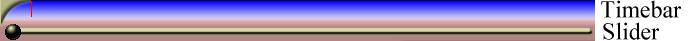
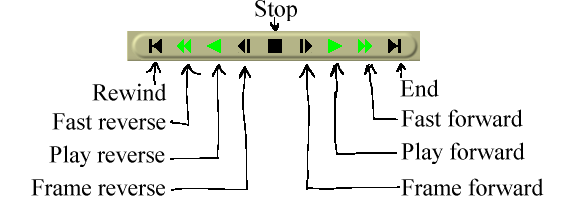
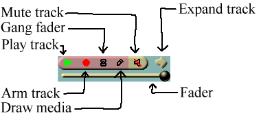
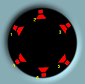
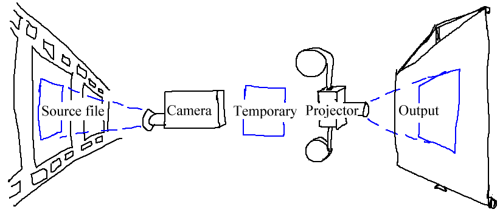
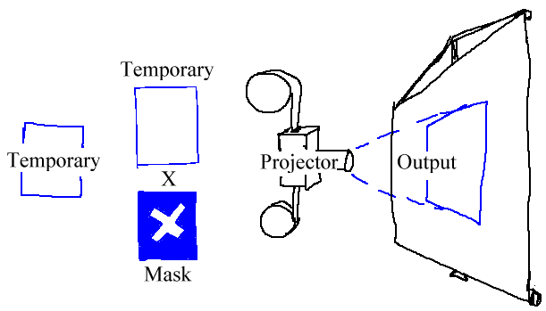
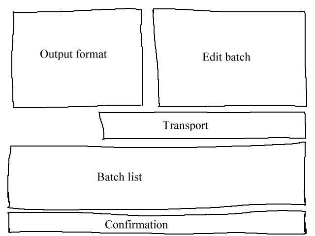
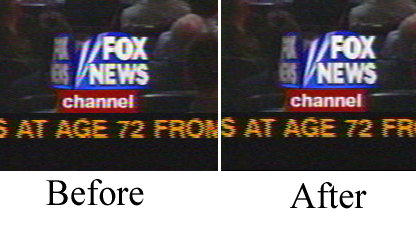

Secrets of Cinelerra
ABOUT CINELERRA
For years some people have wanted a way to edit their audio and video
in one place as fluidly as writing text. Cinelerra tries to be a
single location for all audio and video editing needs. All the
recording, editing, and playback are handled here. It can be used as
an audio player. It can be used to record audio or video. It can even
be used as a photo retoucher.
There are two types of moviegoers: producers who create new content,
going back over their content at future points for further refinement,
and consumers who want to acquire the content and watch it. Cinelerra
is not intended for consumers. Cinelerra has many features for
uncompressed content, high resolution processing, and compositing, with
very few shortcuts. Producers need these features because of the need
to retouch many generations of footage with alterations to the format,
which makes Cinelerra very complex. There are many more standard tools
for consumers like MainActor, Kino, or Moxy, which you should consider
before using Cinelerra.
In 1996 our first editor came out: Broadcast 1.0. It was just a window
with a waveform in it, it could cut and paste stereo audio waveforms on
a UNIX box, except unlike other audio editors it could handle files up
to 2 gigabytes with only 64 megs of RAM. That was a feature normally
only accessible to the highest end professional audio houses.
In 1997 Broadcast 1.0 was replaced by Broadcast 2.0. This time the
window had a menubar, patchbay, console, and transport control.
Broadcast 2.0 still only handled audio but this time it handled
unlimited tracks, and it could perform effects on audio and save the
resulting waveform to disk. More notably a few effects could be
performed as the audio was playing back, in realtime. A user could mix
unlimited numbers of tracks, adjust fade, pan, and EQ, and hear the
result instantly. Amazingly this real time tweeking is still
unavailable on most audio programs.
But Broadcast 2.0 still didn't handle video and it wasn't very graceful
at audio either. In 1999 video broke into the story with Broadcast
2000. This iteration of the Broadcast series could do wonders with
audio and offered a pretty good video feature set. It could edit video
files up to 64 terabytes. It could do everything Broadcast 2.1 did
with audio except now all effects for video and audio could be chained
and performed on the fly, with instant feedback as a user tweeked
parameters during playback. Broadcast 2000 made it very easy to do a
lot of processing and editing on video and audio that would otherwise
involve many hours setting up command line sequences and writing to
disk. For a time it seemed as if the original dream of immersive movie
making for everyone regardless of income level had arrived.
Later on Broadcast 2000 began to come short. Its audio and video was
graceful if you knew how to use it efficiently, but quality issues and
new user interface techniques were emerging. Broadcast 2000 kept the
audio interface from its ancestors, which didn't apply well to video.
Users likewise were maturing. No longer would it be sufficient to just
edit video on a UNIX box. Most users expected on UNIX the same thing
they got in Win or Mac. In mid 2000 designs for a Broadcast 2000
replacement were drafted. The Broadcast name was officially retired
from the series and the software would now be called Cinelerra.
Cinelerra would allow users to configure certain effects in much less
time than required with Broadcast 2000. It would begin to emulate some
of the features found in Win and Mac software while not attempting to
become a clone. It's interface would be designed for video from the
ground up, while supplementing that with the Broadcast audio
interface. As always, quality improvements would happen.
ABOUT THIS MANUAL
Like the operating system and compiler for a piece of software, the
document writing format is the most important thing in choosing our
document format. A piece of software which compiles on GCC and Linux
will be usable as long as there are C compilers. Documents written in
Texinfo will be readable as long as there's a C compiler.
After many years of searching for the perfect documentation format
we've arrived at TexInfo. This format can be converted to HTML,
printed, automatically indexed, but most importantly is not bound to
any commercial word processor.
There are no screenshots in this manual. Screenshots become obsolete
quickly and as a result confuse the users. What looks one way in a
screenshot will always look different in the real program because the
real program and the manual are always evolving, never perfectly
synchronized. It is true that manuals should have screenshots, but our
objective in omitting screenshots is to keep the software costs minimal
so you don't have to pay for it. That includes additional labor to
synchronize the manual with the software.
In addition to telling you the basic editing features of Cinelerra this
manual covers tricks that won't be described anywhere else. We're
going to try to come up with certain things you can do with Cinelerra
that you wouldn't think of on your own.
INSTALLATION
The Cinelerra package contains Cinelerra and most of the libraries
needed to run it. We try to include all the dependancies because of
the difficulty in tracking down the right versions. Also included are
some utilities for handling files. The following are the general
contents of all Cinelerra packages.
-
Foreign language translations - These go into /usr/share/locale.
-
Cinelerra executable - This goes into /usr/bin
-
Cinelerra plugins - These go into /usr/lib/cinelerra
-
soundtest - Utility for determining sound card buffer size.
-
mplexhi - Multiplexing of MPEG elementary streams with standards conformance.
-
mplexlo - Multiplexing of MPEG elementary streams without standards
conformance but more efficiently.
-
mpeg3toc - Utility for indexing and reading MPEG files.
INSTALLING AN RPM
Cinelerra is best installed by downloading an RPM and running
rpm -U --force --nodeps hvirtual*.rpm
on a RedHat system.
On systems which don't support RPM look for a utility called
rpm2cpio. Download a Cinelerra RPM and from the /
directory run
rpm2cpio hvirtual*.rpm | cpio -i --make-directories
COMPILING FROM SCRATCH
It should be noted that the compiler used in building Cinelerra
binaries is the free GNU compiler and very conservative optimization
flags. You can try different compilers and optimization flags by
compiling the source but this is hard.
The compilation is verified on a vanilla RedHat 9.0 installation,
workstation mode. RedHat 9.0 doesn't install nasm. This has to be
installed manually for compilation to succeed. Compiling the source is
hard and there's no warranty if the source code fails to compile, but
the method for compiling starts by downloading the source code and
decompressing.
tar jxf cinelerra*.tar.bz2
Enter the hvirtual directory
cd cinelerra
and set the CFLAGS environment variable. The flags for the GCC
compiler are constantly changing. These are our most recent flags.
For Pentium II use:
export CFLAGS='-O3 -march=i686 -fmessage-length=0 -funroll-all-loops -fomit-frame-pointer -falign-loops=2 -falign-jumps=2 -falign-functions=2'
For Pentium I and old AMD's use:
export CFLAGS='-O3 -fmessage-length=0 -funroll-all-loops -fomit-frame-pointer -falign-loops=2 -falign-jumps=2 -falign-functions=2'
For new AMD's use:
export CFLAGS='-O3 -march=athlon -fmessage-length=0 -funroll-all-loops -fomit-frame-pointer -falign-loops=2 -falign-jumps=2 -falign-functions=2'
Then run
./configure
This checks the build environment for the right tools and should give
you an error if a tool is missing. Once that succeeds run
make
The make procedure should run through all the directories and put
binaries in the i686 directories. When we originally supported
Alpha it was convenient to compile Alpha and i686 binaries
simultaneously, in different directories, so all the binaries are put in
subdirectories.
Once finished run
make install
to install the binaries. The output is put in the following directories:
- Executables -> /usr/bin
- Plugins -> /usr/lib/cinelerra
- Translations -> /usr/share/locale/*/LC_MESSAGES/cinelerra.mo
The main binaries are /usr/bin/cinelerra and several utilities for
reading MPEG transport streams.
Run Cinelerra by running
/usr/bin/cinelerra
CONFIGURATION
Because of the variety of uses, Cinelerra cannot be run optimally
without some intimate configuration for your specific needs. Very few
parameters are adjustible at compile time. Runtime configuration is
the only option for most configuration because of the multitude of
parameters.
Go to settings->preferences and run through the options.
ENVIRONMENT VARIABLES
In UNIX derivatives, environment variables are global variables in the
shell which all applications can read. They are set with a command
like set VARIABLE=value. All the environment variables can be
viewed with a command like env. Cinelerra recognizes the following
environment variables:
- LADSPA_PATH - A colon separated list of directories to search
for LADSPA plugins. These are not native Cinelerra plugins.
See LADSPA EFFECTS.
- GLOBAL_PLUGIN_DIR - The directory Cinelerra should look for
native plugins in. The default is /usr/lib/cinelerra but you may need an
alternate directory if you're sharing the same executable directory
among many machines via NFS. Plugins of different binary formats need
to be in different directories.
PLAYBACK
AUDIO OUT
These determine what happens when you play sound from the timeline.
- SAMPLES TO READ FROM DISK
Cinelerra uses a pipeline for rendering audio. The first stage is
reading large chunks of audio from disk, the samples to read from
disk. This is followed by processing small fragments in a virtual
console.
- SAMPLES TO SEND TO CONSOLE:
The second stage is rendering small fragments through the virtual
console to the sound driver. A larger value here causes more latency
when you change mixing parameters but gives more reliable playback.
Some sound drivers don't allow changing of the console fragment so
latency is unchanged no matter what this value is.
-
VIEW FOLLOWS PLAYBACK
Causes the timeline window to scroll when the playback cursor moves out
of view. This can bog down the X Server.
- USE SOFTWARE FOR POSITIONING INFORMATION
Most soundcards and sound drivers don't give reliable information on
the number of samples the card has played. When playing video you need
this information for synchronization. This option causes the sound
driver to be ignored and a software timer to be used for
synchronization.
- AUDIO PLAYBACK IN REALTIME:
Back in the days when 150Mhz was the maximum, this allowed
uninterrupted playback on heavy loads. Now you'll probably only need it
for playing video and audio when the load is to high for uninterrupted
audio.
- AUDIO DRIVER
There are many sound drivers for Linux. This allows selecting one and
setting parameters specific to it. Some of the common parameters for a
sound driver are
- DEVICE PATH
Usually a file in the /dev/ directory which controls the
device.
-
BITS
The number of bits of precision Cinelerra should set the device for.
This sometimes has a figuritive meaning. Some sound drivers need to be
set to 32 bits to perform 24 bit playback and won't play anything when
set to 24 bits. Some sound drivers need to be set to 24 bits for 24
bit playback.
-
CHANNELS
The number of channels Cinelerra should set the device for. Regardless
of the number of channels in the project, the number of channels set
here will be written to the device. When this is set to 2 and the
project has 1 channel you'll hear sound through the left speaker and
not centered as expected for a monaural project. When this is set to 1
and the project has 2 channels you'll hear the left channel centered
and not 2 channels mixed together.
VIDEO OUT
These determine what happens when you play video from the timeline.
-
FRAMERATE ACHIEVED
The number of frames per second being
displayed during playback.
-
SCALING EQUATION
The algorithm used in all video resizing in
the virtual console. This doesn't affect scaling to the size of the
compositor window.
- NEAREST NEIGHBOR ENLARGE AND REDUCE
lowest but fastest
quality. Produces jagged edges and uneven motion.
-
BICUBIC ENLARGE AND BILINEAR REDUCE
highest but slowest
quality. For enlarging a bicubic interpolation is used, which blurs
slightly but doesn't reveal stair steps. For reduction a bilinear
interpolation is used, which produces very sharp images and reduces
noise. The bilinear reduced images can be sharpened with a sharpen
effect with less noise than a normal sized image.
-
BILINEAR ENLARGE AND BILINEAR REDUCE
when slight enlargement
is needed a bilinear enlargement looks better than a bicubic
enlargement.
-
PRELOAD BUFFER FOR QUICKTIME
The Quicktime/AVI decoder can
handle CDROM sources better when this is around 1000000. This reduces
the amount of seeking. For normal use this should be 0.
-
MPEG-4 DEBLOCKING
For assets which are compressed in OpenDivx and Quicktime, this enables
deblocking. This greatly improves the picture quality during decoding
while slowing it down.
-
VIDEO DRIVER
Normally video on the timeline goes to the
compositor window during continuous playback and when the insertion
point is repositioned. Instead of sending video to the Compositor
window the video driver can be set to send video to another output
device during continuous playback. This doesn't affect where video
goes when the insertion point is repositioned, however.
Various parameters are given for Video Driver depending on the driver.
-
DISPLAY
The is intended for dual monitor
displays. Depending on the value of Display, the Compositor window
will appear on a different monitor from the rest of the windows.
-
DEVICE PATH
Usually a file in the /dev/ directory
which controls the device.
-
SWAP FIELDS
Make the even lines odd and the odd lines even
when sending to the device. On an NTSC or 1080i monitor the fields may
need to be swapped to prevent jittery motion.
-
OUTPUT CHANNEL
Devices with multiple outputs may need a
specific connector to send video on.
-
PORT
The IEEE1394 standard specifies something known as the
port. This is probably the firewire card number in the system
to use.
-
CHANNEL
The IEEE1394 standard specifies something known as the
channel. For DV cameras it's always 63.
RECORDING
AUDIO IN
These determine what happens when you record audio.
-
RECORD DRIVER
This is used for recording audio in the Record window. It may be
shared with the Record Driver for video if the audio and video are
wrapped in the same stream. It takes variable parameters depending on
the driver. The parameters have the same meaning as they do for
playback.
-
DEVICE PATH
Usually a file in the /dev/ directory which controls the
device.
-
BITS
The number of bits of precision Cinelerra should set the device for.
This sometimes has a figuritive meaning. Some sound drivers need to be
set to 32 bits to perform 24 bit recording and won't record anything
when set to 24 bits. Some sound drivers need to be set to 24 bits for
24 bit recording.
- CHANNELS
The number of channels Cinelerra should set the device for. Regardless
of the number of channels in the record operation, the number of
channels set here will be read from the device. When this is set to 2
and the record operation has 1 channel you'll record the left speaker
and not a mix of the left and right speakers as expected for a monaural
project. When this is set to 1 and the project has 2 channels you'll
record the left and right channels mixed into the left speaker and not
1 channel spead across two speakers.
-
SAMPLES TO WRITE AT A TIME
Audio is first read in small fragments from the device. Many small
fragments are combined into a large fragment before writing to disk.
The disk writing process is done in a different thread. The value here
determines how large the combination of fragments is for each disk
write.
-
SAMPLE RATE FOR RECORDING
Regardless of what the project settings are. This is the sample rate
used for recording. This should be the highest the audio device
supports.
VIDEO IN
These determine what happens when you record video.
-
RECORD DRIVER
This is used for recording video in the Record window. It may be
shared with the Record Driver for audio if the audio and video are
wrapped in the same stream. It takes variable parameters depending on
the driver. The parameters have the same meaning as they do for
playback.
-
FRAMES TO RECORD TO DISK AT A TIME
Frames are recorded in a pipeline. First frames are buffered in the
device. Then they're read into a larger buffer for writing to disk.
The disk writing is done in a different thread as the device reading.
For certain codecs the disk writing uses multiple processors. This
value determines how many frames are written to disk at a time.
-
FRAMES TO BUFFER IN DEVICE
The number of frames to store in the device before reading. This
determines how much latency there can be in the system before frames
are dropped.
- USE SOFTWARE FOR POSITIONING INFORMATION
Video uses audio for
synchronization but most soundcards don't give accurate position
information. This calculates an estimation of audio position in
software instead of the hardware for synchronization.
-
SYNC DRIVES AUTOMATICALLY
For high bitrate recording the drives may be fast enough to store the
data but Linux may wait several minutes and stall as it writes several
minutes of data at a time. This forces Linux to flush its buffers
every second instead of every few minutes and produce slightly better
realtime behavior.
-
SIZE OF CAPTURED FRAME
This is the size of the frames recorded. It is independant of the
project frame size because most video devices only record a fixed frame
size. If the frame size given here isn't supported by the device it
might crash Cinelerra.
- FRAME RATE FOR RECORDING
The frame rate recorded is different from the project settings. This
sets the recorded frame rate.
PERFORMANCE
You'll spend most of your time configuring this section. The main
focus of performance is rendering parameters not available in the
rendering dialog.
- CACHE ITEMS
To speed up rendering, several assets are kept open simultaneously.
This determines how many are kept open. A number too large may exhaust
your memory pretty fast and result in a crash. A number too small may
result in slow playback as assets need to be reopened more frequently.
-
SECONDS TO PREROLL RENDERS
Some effects need a certain amount of time to settle in. This sets a
number of seconds to render without writing to disk before the selected
region is rendered. When using the renderfarm you'll sometimes need to
preroll to get seemless transitions between the jobs. Every job in a
renderfarm is prerolled by this value. This does not affect background
rendering, however. Background rendering uses a different preroll
value.
-
FORCE SINGLE PROCESSOR USE
Cinelerra tries to use all processors on the system by default but
sometimes you'll only want to use one processor, like in a renderfarm
client. This forces only one processer to be used. The operating
system, however, usually uses the second processor anyway for disk
access so this option is really a 1.25 processor mode. The value of
this parameter is used in renderfarm clients.
BACKGROUND RENDERING
Background rendering was originally concieved to allow HDTV effects to
be displayed in realtime. Background rendering causes temporary output
to constantly be rendered while the timeline is being modified. The
temporary output is played during playack whenever possible. It's very
useful for transitions and previewing effects which are too slow to
display in a reasonable amount of time. If renderfarm is enabled, the
renderfarm is used for background rendering, giving you the potential
for realtime effects if enough network bandwidth and CPU nodes exist.
- FRAMES PER BACKGROUND RENDERING JOB
This only works if renderfarm is being used, otherwise background
rendering creates a single job for the entire timeline. The number of
frames specified here is scaled to the relative CPU speed of rendering
nodes and used in a single renderfarm job. The optimum number is 10 -
30 since network bandwidth is used to initialize each job.
- FRAMES TO PREROLL BACKGROUND
This is the number of frames to render ahead of each background
rendering job. Background rendering is degraded when preroll is used
since the jobs are small. When using background rendering, this number
is ideally 0. Some effects may require 3 frames of preroll.
- OUTPUT FOR BACKGROUND RENDERING
Background rendering generates a sequence of image files in a certain
directory. This parameter determines the filename prefix of the image
files. It should be on a fast disk, accessible to every node in the
renderfarm by the same path. Since hundreds of thousands of image
files are usually created, ls commands won't work in the
background rendering directory. The browse button for
this option normally won't work either, but the  configuration button for this option works.
configuration button for this option works.
- FILE FORMAT
The file format for background rendering has to be a sequence of
images. The format of the image sequence determines the quality and
speed of playback. JPEG is good most of the time.
RENDERFARM
To use the renderfarm set these options. Ignore them for a standalone
system
-
USE RENDER FARM FOR RENDERING
When selected, all the
file->render operations use the renderfarm.
-
NODES
Displays all the nodes on the renderfarm and which ones are active.
Nodes are added by entering the host name of the node, verifying the
value of port and hitting add node.
Computer freaks may be better off editing the
~/.bcast/.Cinelerra_rc file than this if they have hundreds of
nodes. Remember that .Cinelerra_rc is overwritten whenever a copy of
Cinelerra exits.
Select the ON column to activate and deactivate nodes once they
are created.
Nodes may be edited by highlighting a row and hitting apply changes.
-
HOSTNAME
Edit the hostname of an existing node or enter the hostname of a new
node here.
-
PORT
Edit the port of an existing node or enter the port of a new node here.
-
REPLACE NODE
When editing an existing node, hit this to commit the changes to
HOSTNAME and PORT. The changes won't be committed if you
don't hit this button.
-
ADD NODE
Create a new node with the HOSTNAME and PORT settings.
-
DELETE NODE
Deletes whatever node is highlighted in the NODES list.
-
SORT NODES
Sorts the NODES list based on the hostname.
-
RESET RATES
This sets the framerate for all the nodes to 0. Frame rates are used
to scale job sizes based on CPU speed of the node. Frame rates are
only calculated when renderfarm is enabled.
-
USE VIRTUAL FILESYSTEM
Normally the directory on the master node containing the source and
destination assets is mounted on the clients. The assets on the
clients should be visible in the same locations as they are on the
master node. This can be hard to set up and requires root access.
A user level version of NFS was built into Cinelerra and called the
Virtual File System. This transparently redirects all file I/O over
the network without requiring a replication of the master node's
directory structure or root access on the client. The client sees the
exact directory structure on the master node but in reality is sending
network packets to access it.
There is a penalty for doing this though, since Virtual Filesystem
isn't as refined as NFS. Operations that access one byte at a time are
really slow.
Certain file format parsers are extemely slow over the Virtual
Filesystem because they access very small amounts of data at a time.
The PCM audio formats do this. These are best rendered using NFS.
Unless you need to run rendering clients without root access or have a
lot of assets in different directories, use NFS instead.
-
TOTAL JOBS TO CREATE
Determines the number of jobs to dispatch to the renderfarm. The more
jobs you create, the more finely balanced the renderfarm becomes.
Determine the total jobs to create by multiplying the number of nodes
including the master node by some number. Multiply them by 1 to have
one job dispatched for every node. Multiply them by 3 to have 3 jobs
dispatched for every node. If you have 10 slave nodes and one master
node, specify 33 to have a well balanced renderfarm.
INTERFACE
These parameters affect purely how the user interface works.
-
INDEX FILES GO HERE
Back in the days when 4 MB/sec was unearthly speed for a hard drive,
index files were introduced to speed up drawing the audio tracks. This
option determines where index files are placed on the hard drive.
-
SIZE OF INDEX FILE
Determines the size of an index file. Larger index sizes allow smaller
files to be drawn faster while slowing down the drawing of large files.
Smaller index sizes allow large files to be drawn faster while slowing
down small files.
-
NUMBER OF INDEX FILES TO KEEP
To keep the index directory from becoming unruly, old index files are
deleted. This determines the maximum number of index files to keep in
the directory.
-
DELETE ALL INDEXES
When you change the index size or you want to clean out excessive index
files, this deletes all the index files.
- USE HOURS:MINUTES:SECONDS.XXX
Various representations of time are given. Select the most convenient
one. The time representation can also be changed by CTRL
clicking on the time ruler.
- USE THUMBNAILS
The Resource Window displays thumbnails of assets by default. This can
take a long time to set up. This option disables the thumbnails.
- CLICKING IN/OUT POINTS DOES WHAT
Cinelerra not only allows you to perform editing by dragging in/out
points but also defines three seperate operations which occur when you
drag an in/out point. For each mouse button you select the behavior in
this window. The usage of each editing mode is described in editing.
- MIN DB FOR METER
Some sound sources have a lower noise threshold than others.
Everything below the noise threshold is meaningless. This option sets
the meters to clip below a certain level. Consumer soundcards usually
bottom out at -65. Professional soundcards bottom out at -90.
- FORMAT FOR METER
This option allows you to select the format for all the VU meters. If
you're a CS major select percentage and if you're a EE major select DB.
With that, be aware all levels in Cinelerra are input as DB.
- THEME
Cinelerra supports variable themes. Select one here and restart
Cinelerra to see it.
ABOUT
This section gives you information about the copyright, the time of the
current build, the lack of a warranty, and the versions of some of the
libraries. Be sure to agree to the terms of the lack of the warranty.
THE MAIN WINDOWS
When Cinelerra first starts, you'll get four main windows. Hitting
CTRL-w in any window closes it.
- Viewer
In here you'll scrub around source media and clips, selecting regions
to paste into the project. Operations done in the viewer affect a
temporary EDL or a clip but not the timeline.
- Compositor
This window displays the output of the timeline. It's the interface
for most compositing operations or operations that affect the
appearance of the timeline output. Operations done in the Compositor
affect the timeline but don't affect clips.
- Program
This contains the timeline and the entry point for all menu driven
operations. The timeline consists of a vertical stack of tracks with
horizontal representation of time. This defines the output of
rendering operations and what is saved when you save files.
- Resources
Effects, transitions, clips, and assets are accessed here. Most of the
resources are inserted into the project by dragging them out of the
resource window. Management of resource allocation is also performed
here.
Under the Window menu you'll find options affecting the main
windows. default positions repositions all the windows to a 4
screen editing configuration. On dual headed displays, the
default positions operation fills only one monitor with windows.
An additional window, the levels window can be brought up from
the Window menu. The levels window displays the output
audio levels after all mixing is done.
LOADING AND SAVING FILES
LOADING FILES
All data that you work with in Cinelerra is acquired either by
recording from a device or by loading from disk. This
section describes loading.
The loading and playing of files is just as you would expect. Just go
to file->Load, select a file for loading, and hit ok. Hit
the forward play button and it should start playing, regardless of
whether a progress bar has popped up.
Another way to load files is to pass the filenames as arguments on the
command line. This creates new tracks for every file and starts the
program with all the arguments loaded.
If the file is a still image, the project's attributes are not changed
and the first frame of the track becomes the image. If the file has
audio, Cinelerra may build an index file for it to speed up drawing.
You can edit and play the file while the index file is being built.
SUPPORTED FILE FORMATS
The format of the file affects what Cinelerra does with it. Some
formats replace all the project settings. Some just insert data with
existing project settings. If your project sample rate is 48khz and
you load a sound file with 96khz, you'll still be playing it at
48khz. XML files, however, replace the project settings. If you load
an XML file at 96khz and the current project sample rate is 48khz,
you'll change it to 96khz. Supported file formats are currently:
- WAV
- PCM
- AIFF
- Uncompresed Quicktime
Quicktime is not the standard for UNIX but we use it because it's well
documented. All of the Quicktime movies on the internet are
compressed. Cinelerra doesn't support compressed Quicktime movies.
Most of the Quicktime footage dealt with in Cinelerra is generated by
Cinelerra either recording from a device or rendering. The best
Quicktime settings to use are JPEG video and twos audio.
- JPEG, PNG, TIFF, TGA sequences
Cinelerra generates a special table of contents file when you render an
image sequence. You can either select every image file to load or
select the table of contents when the rendering is done. Selecting the
table of contents is faster and doesn't fill up the resource window
with thousands of images.
- JPEG, PNG, TIFF, TGA still images
When loaded, the image takes up one frame in length and doesn't change
the project attributes.
- AVI with mp3 audio and MPEG-4 video
- MPEG 1, 2 video
You need to run mpeg3toc to generate a table of contents for
these, then load the table of contents. Mpeg3toc needs the absolute
path of the MPEG file. If you want to edit a DVD, find the
corresponding ifo file for the program of interest and run
mpeg3toc /cdrom/video_ts/vts_01_0.ifo dvd.toc
or something similar. Then load dvd.toc. This allows frame
accurate editing where none would be possible otherwise.
- MPEG program streams and transport streams
You need to run mpeg3toc on these just like MPEG 1,2 video.
Program and transport streams are structured into multiple tracks.
Each track can be video or audio. Each audio track can have 1-6
channels. Cinelerra converts each channel of audio into a track, so
for MPEG streams with multiple tracks, the tracks will be flattened.
- MPEG audio layer II, III
These can be loaded directly with no table of contents. Variable
bitrate streams may need a table of contents but are playable without
it.
- AC3 audio
- XML
These are generated by Cinelerra for storing edit lists. They change
project attributes when loaded.
INSERTION STRATEGY
Usually three things happen when you load a file. First the existing
project is cleared from the screen, second the project's attributes are
changed to match the file's, and finally the new file's tracks are
created in the timeline.
But Cinelerra lets you change what happens when you load a file.
In the file selection box go to the Insertion strategy box and
select it. Each of these options loads the file a different way.
- Replace current project
All tracks in the current project are deleted and new tracks are
created to match the source. Project attributes are only changed when
loading XML. If multiple files are selected it adds new tracks for
every file.
- Replace current project and concatenate tracks
Same as replace current project except if multiple files are selected
it concatenates the tracks of every file after the first.
- Append in new tracks
The current project is not deleted and new tracks are created for the
source.
- Concatenate to existing tracks
The current project is not deleted and new files are concatenated to
the existing tracks.
- Paste at insertion point
The file is pasted in like a normal paste operation.
- Create new resources only
The timeline is unchanged and new resources are created in the Resource
Window.
The insertion strategy is a recurring option in many of Cinelerra's
functions. In each place the options do the same thing. With these
options you can almost do all your editing by loading files.
If you load files by passing command line arguments to Cinelerra, the
files are loaded with Replace current project rules.
LOADING MULTIPLE FILES
In the file selection box go to the list of files. Select a file. Go
to another file and select it while holding down CTRL. This
selects one additional file. Go to another file and select it while
holding down SHIFT. This selects every intervening file. This
behavior is available in most every list box.
Select a bunch of mp3 files and Replace current project and
concatenate tracks in the insertion strategy to create a song
playlist.
LOADING THE BACKUP
There is one special XML file on disk at all times. After every
editing operation Cinelerra saves the current project to a backup in
$HOME/.bcast/backup.xml. In the event of a crash go to
file->load backup to load the backup. It is important after a
crash to reboot Cinelerra without performing any editing operations.
Loading the backup should be the first operation or you'll overwrite
the backup.
SAVING FILES
When Cinelerra saves a file it saves an edit decision list of the
current project but doesn't save any media. Go to File->save
as.... Select a file to overwrite or enter a new file. Cinelerra
automatically concatenates .xml to the filename if no
.xml extension is given.
The saved file contains all the project settings and locations of every
edit but instead of media it contains pointers to the original media
files on disk.
For each media file the XML file stores either an absolute path or just
the relative path. If the media is in the same directory as the XML
file a relative path is saved. If it's in a different directory an
absolute path is saved.
In order to move XML files around without breaking the media linkages
you either need to keep the media in the same directory as XML file
forever or save the XML file in a different directory than the media
and not move the media ever again.
If you want to create an audio playlist and burn it on CD-ROM, save the
XML file in the same directory as the audio files and burn the entire
directory. This keeps the media paths relative.
XML files are useful for saving the current state before going to sleep
and saving audio playlists but they're limited in that they're specific
to Cinelerra. You can't play XML files in a dedicated movie player.
Realtime effects in an XML file have to be resynthesized every time you
play it back. The XML file also requires you to maintain copies of all
the source assets on hard drives, which can take up space and cost a
lot of electricity to spin. For a more persistent storage of the
output there's rendering.
RENDERING FILES
Rendering takes a section of the timeline, performs all the editing,
effects and compositing, and stores it in a pure movie file. You can
then delete all the source assets, play the rendered file in a movie
player, or bring it back into Cinelerra for more editing. It's very
difficult to retouch any editing decisions in the pure movie file,
however, so keep the original assets and XML file around several days
after you render it.
All rendering operations are based on a region of the timeling to be
rendered. You need to define this region of the timeline. The
navigation section describes methods of defining regions.
See NAVIGATING THE PROJECT. The rendering functions define the
region based on a set of rules. When a region is highlighted or in/out
points are set, the affected region is rendered. When no region is
highlighted, everything after the insertion point is rendered. Merely
by positioning the insertion point at the beginning of a track and
unsetting all in/out points, the entire track is rendered.
SINGLE FILE RENDERING
The fastest way to get media to disk is to use the single file
rendering function.
Go to File->render to bring up the render dialog. Select the
magnifying glass to bring up a file selection dialog. This determines
the filename to write the rendered file to and the encoding parameters.
In the render dialog select a format from the File Format menu.
The format of the file determines whether you can render audio or video
or both. Select the Render audio tracks toggle to generate
audio tracks and Render video tracks to generate video tracks.
Select the wrench next to each toggle to set compression
parameters. If the file format can't store audio or video the
compression parameters will be blank. If Render audio tracks or
Render video tracks is selected and the file format doesn't
support it, trying to render will pop up an error.
The Create new file at each label option causes a new file to be
created when every label in the timeline is encountered. This is
useful for dividing long audio recordings into individual tracks. When
using the renderfarm, Create new file at each label causes one
renderfarm job to be created at every label instead of using the
internal load balancing algorithm to space jobs.
When Create new file at each label is selected, a new filename
is created for every output file. If the filename given in the render
dialog has a 2 digit number in it, the 2 digit number is overwritten
with a different incremental number for every output file. If no 2
digit number is given, Cinelerra automatically concatenates a number to
the end of the given filename for every output file.
In the filename /hmov/track01.wav the 01 would be
overwritten for every output file. The filename
/hmov/track.wav; however, would become /hmov/track.wav001
and so on and so forth. Filename regeneration is only used when either
renderfarm mode is active or creating new files for every label is
active.
Finally the render dialog lets you select an insertion mode. The
insertion modes are the same as with loading files. In this case if
you select insert nothing the file will be written out to disk
without changing the current project. For other insertion strategies
be sure to prepare the timeline to have the output inserted at the
right position before the rendering operation is finished.
See EDITING. Editing describes how to cause output to be inserted
at the right position.
It should be noted that even if you only have audio or only have video
rendered, a paste insertion strategy will behave like a normal
paste operation, erasing any selected region of the timeline and
pasting just the data that was rendered. If you render only audio and
have some video tracks armed, the video tracks will get truncated while
the audio output is pasted into the audio tracks.
BATCH RENDERING
If you want to render many projects to media files without having to
repeatedly attend to the Render dialog, batch rendering is the
function to use. In this function, you specify many EDL files to
render and the unique output files for each. Then Cinelerra loads each
EDL file and renders it automatically, without any user intervention.
Each EDL file and its output to be rendered is called a batch.
This allows a huge amount of media to be processed and greatly
increases the value of an expensive computer.
The first thing to do when preparing to do batch rendering is define
projects to be rendered. The batch renderer requires a separate EDL
file for every batch to be rendered. Set up a project and define the
region to be rendered either by highlighting it, setting in/out points
around it, or positioning the insertion point before it. Then save the
project as an EDL. Define as many projects as needed this way. The
batch renderer takes the active region from the EDL file for rendering.
With all the EDL files prepared with active regions, go to
File->batch render. This brings up the batch rendering dialog.
The interface for batch rendering is a bit more complex than for single
file rendering.
A list of batches must be defined before starting a batch rendering
operation. The table of batches appears on the bottom of the batch
render dialog and is called batches to render. Above this are
the configuration parameters for a single batch.
Set the output path, file format, Audio, Video, and
Create new file at each label parameters as if it was a single
file. These parameters apply to only one batch. In addition to the
standard rendering parameters, you must select the source EDL to use in
the batch. Do this by setting the EDL path.
If the batches to render list is empty or nothing is highlighted,
click New to create a new batch. The new batch will contain all
the parameters you just set.
Repeatedly press the New button to create more batches with the
same parameters. Highlight any batch and edit the configuration on the
top of the batch render window. The highlighted batch is always
synchronized to the information displayed.
Click and drag batches to change the order in which they're rendered.
Hit delete to permanently remove the highlighted batch.
In the list box is a column which enables or disables the batch. This
way batches can be skipped without being deleted. Click on the
Enabled column in the list box to enable or disable a batch. If it
is checked, the batch is rendered. If it is blank, the batch is
skipped.
The other columns in the batch list are informative.
- Output The output path of the batch.
- EDL The source EDL of the batch.
- Elapsed The amount of time taken to render the batch if it is finished.
To start rendering from the first enabled batch, hit Start.
Once rendering, the main window shows the progress of the batch. Once
the batch finishes, the elapsed column in the batch list is updated and
the next batch is rendered until all the enabled batches are finished.
The currently rendering batch is always highlighted red.
To stop rendering before the batches are finished without closing the
batch render dialog, hit Stop.
To stop rendering before the batches are finished and close the batch
render dialog, hit Cancel.
To exit the batch render dialog whether or not anything is being
rendered, hit Cancel.
THE RENDER FARM
When bicubic interpolation and HDTV was first done on Cinelerra, the
time needed to produce the simplest output became unbearable even on
the fastest dual 1.7Ghz Xeon of the time. Renderfarm support even in
the simplest form brings HDTV times back in line with SD while making
SD faster than realtime.
While the renderfarm interface isn't spectacular, it's simple enough to
use inside an editing suite with less than a dozen nodes without going
through the same amount of hassle you would with a several hundred node
farm. Renderfarm is invoked transparently for all file->render
operations when it is enabled in the preferences.
It should be noted that Create new file at each label causes a
new renderfarm job to be created at each label instead of the default
load balancing. If this option is selected when no labels exist, only
one job will be created.
A Cinelerra renderfarm is organized into a master node and any number
of slave nodes. The master node is the computer which is running the
GUI. The slave nodes are anywhere else on the network and are run from
the command line.
Cinelerra divides the selected region of the timeline into a certain
number of jobs which are then dispatched to the different nodes
depending on the load balance. The nodes process the jobs and write
their output to individual files on the filesystem. The output files
are not concatenated. It's important for all the nodes and the master
node to use the same filesystem for assets, mounted over the network.
Since most of the time you'll want to bring in the rendered output and
fine tune it on the timeline, the jobs are left in individual files.
You can load these using concatenate mode and render them again
with renderfarm disabled. If the track and output dimensions equal the
asset dimensions, Cinelerra will do a direct copy of all the jobs into
a single file. Note that direct copying doesn't work for MPEG Video.
MPEG has the distinction that you can concatenate the subfiles with the
UNIX cat utility.
Configuration of the renderfarm is described in the configuration
chapter See RENDERFARM. The slave nodes traditionally read and
write data to a common filesystem over a network, thus they don't need
hard drives.
Ideally all the nodes on the renderfarm have similar CPU performance.
Cinelerra load balances on a first come first serve basis. If the last
segment is dispatched to the slowest node, all the fastest nodes may
end up waiting for the slowest node to finish while they themselves
could have rendered it faster.
NAVIGATING THE PROJECT
The thing you want to do most of the time is get to a certain time and
place in the media. Internally the media is organized into tracks.
Each track extends across time. Navigation involves both getting to a
track and getting to a certain time in the track.
NAVIGATING THE PROGRAM WINDOW
The program window contains many features for navigation and displays
the timeline as it is structured in memory: tracks stacked vertically
and extending across time. The horizontal scroll bar allows you to
scan across time. The vertical scroll bar allows you to scan across
tracks.
Below the timeline you'll find the zoom panel. The zoom panel contains
values for sample zoom, amplitude, and track
zoom. These values in addition to the scrollbars are all that's
needed to position the timeline, but at the heart of the batch
rendering dialog are the same parameters you found in single file
rendering.

Changing the sample zoom causes the amount of time visible to
change. If your mouse has a wheel and it works in X11 go over
the tumblers and use the wheel to zoom in and out.
The amplitude only affects audio. It determines how big the
waveform is if the waveform is drawn.
The track zoom affects all tracks. It determines the height of
each track. If you change the track zoom the amplitude zoom
compensates so audio waveforms look proportional.
In addition to the graphical tools, you'll probably more often use the
keyboard to navigate. Use PAGE UP and PAGE DOWN to
scroll up and down the tracks.
Use the LEFT and RIGHT arrows to move across time in
small increments. You'll often need to scroll beyond the end of the
timeline but scrollbars won't let you do it. Instead use the
RIGHT arrow to scroll past the end of timeline.
Use the HOME and END keys to instantly go to the
beginning or end of the timeline. In I-beam mode, hold down
shift while pressing HOME or END to select the region of
the timeline between the insertion point and the key pressed.
Use the UP and DOWN arrows to change the sample zoom by a
power of 2.
CTRL-UP and CTRL-DOWN cause the amplitude zoom to change.
CTRL-PGUP and CTRL-PGDOWN cause the track zoom to change.
THE INSERTION POINT
By default you'll see a flashing insertion point in the program window
the first time you boot it up. This is where new media is pasted onto
the timeline. It's also the starting point of all playback
operations. When rendering it defines the region of the timeline to be
rendered.
The insertion point is normally moved by clicking inside the timebar.
Any region of the timebar not obscured by labels and in/out points is a
hotspot for repositioning the insertion point.
 The main timebar
The main timebar
The insertion point also can be moved by clicking in the timeline
itself, but not always. The insertion point has two modes of
operation:
- drag and drop mode
- cut and paste mode
The mode of operation is determined by selecting the arrow or the
i-beam in the buttonbar.
 The editing mode buttons
The editing mode buttons
If the arrow is highlighted it enables drag and drop mode. In
drag and drop mode, clicking in the timeline doesn't reposition the
insertion point. Instead it selects an entire edit. Dragging in the
timeline repositions the edit, snapping it to other edit boundaries.
This is normally useful for reordering audio playlists and moving
effects around.
If the i-beam is highlighted it enables cut and paste mode. In
cut and paste mode clicking in the timeline repositions the insertion
point. Dragging in the timeline highlights a region. The highlighted
region becomes the playback range during the next playback operation,
the rendered range during the next render operation, and the region
affected by cut and paste operations.
Shift-clicking in the timeline extends the highlighted region.
Double-clicking in the timeline selects the entire edit the
cursor is over.
It should be noted that when moving the insertion point and selecting
regions, the positions are either aligned to frames or aligned to
samples. When editing video you'll want to align to frames. When
editing audio you'll want to align to samples. This is set in
settings->align cursor on frames.
If the highlighted region is the region affected by cut and paste
operations, how do I cut and paste in drag and drop mode? In
this case you need to set in/out points to define an affected region.
THE IN/OUT POINTS
In both editing modes you can set in/out points. The in/out points
define the affected region. In drag and drop mode they are the only
way to define an affected region. In both cut and paste mode and drag
and drop mode they override the highlighted area. If a highlighted
area and in/out points are set, the highlighted area affects playback
while the in/out points affect editing operations. To avoid confusion
it's best to use either highlighting or in/out points but not both
simultaneously.
To set in/out points go to the timebar and position the insertion point
somewhere. Hit the  in point button. Go
to a position after the in point and hit the
in point button. Go
to a position after the in point and hit the  out point button.
out point button.
 Timebar with in/out points set.
Timebar with in/out points set.
Select either the in point or the out point and the insertion point
jumps to that location. After selecting an in point, if you hit the
in point button the in point will be deleted. After selecting
an out point, if you hit the out point button the out point will
be deleted.
If you select a region somewhere else while in/out points already
exist, the existing points will be repositioned when you hit the in/out
buttons.
Shift-clicking on an in/out point extends the highlighted region
to that point.
Instead of using the button bar you can use the [ and ]
keys to toggle in/out points.
The insertion point and the in/out points allow you to define an
affected region but they don't let you jump to exact points on the
timeline very easily. For this purpose there are labels.
USING LABELS IN THE PROGRAM WINDOW
Labels are an easy way to set exact locations on the timeline you want
to jump to. When you position the insertion point somewhere and hit
the  label button a new label appears on the
timeline.
label button a new label appears on the
timeline.
 Timebar with a label on it
Timebar with a label on it
No matter what the zoom settings are, clicking on the label positions
the insertion point exactly where you set it. Hitting the label button
again when a label is selected deletes it.
Shift-clicking on a label extends the highlighted region.
Double-clicking between two labels highlights the region between
the labels.
Hitting the l key has the same effect as the label button.
If you hit the label button when a region is highlighted, two labels
are toggled at each end of the highlighted region. If one end already
has a label, then the existing label is deleted and a label is created
at the opposite end.
Labels can reposition the insertion point when they are selected but
they can also be traversed with the label
traversal buttons. When a label is out of view, the label traversal
buttons reposition the timeline so the label is visible. There are
keyboard shortcuts for label traversal, too.
CTRL-LEFT repositions the insertion point on the previous label.
CTRL-RIGHT repositions the insertion point on the next label.
With label traversal you can quickly seek back and forth on the
timeline but you can also select regions.
SHIFT-CTRL-LEFT extends the highlighted region to the previous
label.
SHIFT-CTRL-RIGHT extends the highlighted region to the next label.
Manually hitting the label button or l key over and over again
to delete a series of labels can get tedious. For deleting a set of
labels, first highlight a region and second use the Edit->Clear
labels function. If in/out points exist, the labels between the
in/out points are cleared and the highlighted region ignored.
NAVIGATING THE VIEWER AND COMPOSITOR
The navigation features of the Viewer and Compositor behave very
similarly. Each has a timebar and slider below the video output. The
timebar and slider are critical for navigation.

The timebar represents the entire time covered by the program. When
you define labels and in/out points it defines those, too. Finally the
timebar defines a region known as the preview region.
The preview region is the region of the timeline which the
slider effects. The slider only covers the time covered by the preview
region. By using a preview region inside the entire program and using
the slider inside the preview region you can quickly and precisely seek
in the compositor and viewer.
When you replace the current project with a file the preview region
automatically resizes to cover the entire file. When you append data
or change the size of the current project, the preview region stays the
same size and shrinks. Therefore, you need to resize the preview
region.
Load a file and then slide around it using the compositor slider. The
insertion point in the main window follows the compositor. Move the
pointer over the compositor's timebar until it turns into a left resize
pointer. The click and drag right. The preview region should have
changed and the slider resized proportionally.
Go to the right of the timebar until a right resize pointer appears.
Drag left so the preview region shrinks.
Go to the center of the preview region in the timebar and drag it
around to convince yourself if can be moved.

Preview region in compositor
If you go to the slider and slide it around with the preview region
shrunk, you'll see the slider only affects the preview region. The
timebar and slider in the viewer window work exactly the same.
Labels and in/out points are fully supported in the viewer and
compositor. The only difference between the viewer and compositor is
the compositor reflects the state of the program while the viewer
reflects the state of a clip but not the program.
When you hit the label button in the compositor, the label
appears both in the compositor timebar and the program timebar.
When you select a label or in/out point in the compositor, the program
window jumps to that position.
 Labels and in/out points in the viewer.
Labels and in/out points in the viewer.
In the viewer and compositor, labels and in/out points are displayed in
the timebar. Instead of displaying just a region of the program, the
timebar displays the entire program here.
Like the Program window, the Compositor has a zoom capability. First,
the pulldown menu on the bottom of the compositor window has a number
of zoom options. When set to Auto the video is zoomed to match
the compositor window size as closely as possible. When set to any
other percentage, the video is zoomed a power of 2 and scrollbars can
be used to scroll around the output. When the video is zoomed bigger
than the window size, not only do scrollbars scan around it but
middle mouse button dragging in the video output scans around
it. This is exactly when The Gimp does.
Furthermore, the zoom toggle causes the Compositor
window to enter zoom mode. In zoom mode, clicking in the video output
zooms in while ctrl-clicking in the video output zooms out. If
you have a wheel mouse, rotating the wheel zooms in or out too.
Zooming in or out with the zoom tool does not change the rendered
output, mind you. It's merely for scrutinizing video or fitting it in
the desktop.
NAVIGATING THE RESOURCES
The resource window is divided into two areas. One area lists folders
and another area lists folder contents. Going into the folder list and
clicking on a folder updates the contents area with the contents of
that folder.
The folder and contents can be displayed as icons or text.
Right clicking in the folder or contents area brings up a menu
containing formatting options. Select Display text to display a
text listing. Select Sort items to sort the contents of the
folder alphabetically.
USING THE TRANSPORT CONTROLS
Transport controls are just as useful in navigation as they are in
playing back footage, hence they are described here. Each of the
Viewer, Compositor, and Program windows has a transport panel.
 The transport panel.
The transport panel is controlled by the keyboard as well as the
graphical interface. For each of the operations it performs, the
starting position is the position of the insertion point or slider.
The ending position is either the end or start of the timeline or the
end or start of the selected region if there is one.
The orientation of the end or start depends on the direction of
playback. If it's forward the end position is the end of the selected
region. If it's backward the end position is the start of the selected
region.
The insertion point moves to track playback. When playback stops it
leaves the insertion point where it stopped. Thus, by playing back you
change the position of the insertion point.
The keyboard interface is usually the fastest and has more speeds. The
transport keys are arranged in a T on the number pad.
- + Fast reverse
- 6 Normal reverse
- 5 Slow reverse
- 4 Frame reverse
- 1 Frame forward
- 2 Slow forward
- 3 Normal forward
- Enter Fast forward
- 0 Stop
- Spacebar Normal forward
Hitting any key on the keyboard twice pauses it.
When using frame advance functions the behavior may seem odd. If you
frame advance forward and then frame advance backward, the displayed
frame doesn't change. This is because the playback position isn't the
frame but the time between two frames. The rendered frame is the area
that the playback position crosses. When you increment the time
between two frames by one and decrement it by one, you cross the same
frame both times and so the same frame is displayed.
USING BACKGROUND RENDERING
Background rendering allows impossibly slow effects to play back in
realtime shortly after the effect is pasted in the timeline. It
continuously renders temporary output. When renderfarm is enabled,
background rendering uses the renderfarm continuously. This way, any
size video can be seen in realtime merely by creating a fast enough
network with enough nodes.
Background rendering is enabled in settings->preferences->performance.
It has one interactive function: settings->set background render. This
sets the point where background rendering begins to where the in point
is. If any video exists, a red bar appears in the time bar showing
what has been background rendered.
It's often useful to insert an effect or a transition and then select
settings->set background render right before the effect to preview it
in full framerates.
EDITING
Editing comprises both the time domain and the track domain. Since the
timeline consists of a stack of tracks, you need to worry about how to
sort and create tracks in addition to what time certain media appears
on a track.
In the time domain, Cinelerra offers many ways to approach the editing
process. The three main methods are two screen editing, drag and drop
editing, and cut and paste editing.
There are several concepts Cinelerra uses when editing which apply to
all the methods. The timeline is where all editing decisions are
represented. This is a stack of tracks in the center of the main
window. It can be scrolled up, down, left and right with the
scrollbars on the right and bottom of it. It can also be scrolled up
and down with a mouse wheel.
The active region is the range of time which is affected by editing
commands on the timeline. The active region is determined first by the
presence of in/out points in the timeline. If those don't exist the
highlighted region is used. If no highlighted region exists the
insertion point is used as the start of the active region. Some
commands treat all the space to the right of the insertion point as
active, like Render, while others treat the active length as 0 if no
end point for the active region is defined.
Finally, editing decisions never affect source material. This is
non destructive editing and it became popular with audio because it
was much faster than if you had to copy all the media affected by an
edit. Editing only affects pointers to source material, so if you want
to have a media file at the end of your editing session which
represents the editing decisions, you need to render it.
See RENDERING FILES.
Every track on the timeline has a set of attributes on
the left, the most important of which is the arm track
attribute.
THE PATCHBAY
On the left of the timeline is a region affectionately known as the
patchbay. The patchbay enables features specific to each track. All
tracks have a text area for naming the track.
All tracks have an expander  for viewing
more options and for viewing the effects on the track. Click on the
expander to expand or collapse the track. If it's pointing sideways,
the track is collapsed. If it's pointing down, the track is expanded.
The effects appear below the media for the track if they exist.
for viewing
more options and for viewing the effects on the track. Click on the
expander to expand or collapse the track. If it's pointing sideways,
the track is collapsed. If it's pointing down, the track is expanded.
The effects appear below the media for the track if they exist.
All tracks have the following row of toggles for several features.

Track attributes
If the toggle is colored, it is enabled. If the toggle is the
background color of most of the windows, it is disabled. Click on the
toggle to enable or disable the feature. Several mouse operations
speed up the configuration of several tracks at a time.
Click on an attribute and drag across adjacent tracks to toggle the
same attribute in those tracks.
Hold down shift while clicking a track's attribute to toggle the
attribute in all the tracks.
Hold down shift while clicking an attribute. Click until all the
tracks except the selected one are disabled. Then drag the cursor over
the adjacent track to enable the attribute in the adjacent track.
The other attributes affect the output of the track.
-
Play track determines whether the track is rendered or not. If
it's off, the track is not rendered. However, if the track is chained
to any other tracks, the other tracks perform all the effects in the
chained track, regardless of play status.
-
Arm track determines whether the track is armed or not. Only the
armed tracks are affected by editing operations. Make sure you
have enough armed destination tracks when you paste or splice material
or some tracks in the material will get left out.
In addition to restricting editing operations, the armed tracks in
combination with the active region determine where material is inserted
when loading files. If the files are loaded with one of the insertion
strategies which doesn't delete the existing project, the armed tracks
will be used as destination tracks.
-
Gang fader causes the fader to track the movement of whatever other
fader you're adjusting. A fader is only ganged if the arm track is
also on. This is normally used to adjust audio levels on all the
tracks simultaneously.
-
Draw media determines if picons or waveforms are drawn on the
track. By default, some file formats load with this off while other
file formats load with it on. This depends on whether the file format
takes a long time to draw on the timeline. Merely set it to on if you
want to see picons for any file format.
-
Mute track causes the output to be thrown away once the track is
completely rendered. This happens whether or not play track is
on. If the track is part of an effect chain, the output of the effect
chain track is overlayed on the final output even though it's routed
back to another track. Mute track is used to keep the effect chain
track from overlapping the output of the source track.
-
Fader All tracks have a fader, but the units of each fader depend
on whether it's audio or video. Click and drag the fader to fade the
track in and out. If it is ganged to other tracks of the same media
type, with the arm option enabled, the other faders should follow.
Hold down shift and drag a fader to center it on 0.
NUDGING TRACKS
Each track has a nudge textbox in the patchbay under the fader and on
the right. You may have to expand the track to see it. The nudge is
the amount the track is shifted left or right during playback. The
track is not displayed shifted on the timeline, but it is shifted when
it's played back. This is useful for synchronizing audio with video,
creating fake stereo, or compensating for an effect which shifts time,
all without tampering with any edits.
Merely enter in the amount of time to shift by to instantly shift the
track. Negative numbers make the track play later. Positive numbers
make the track play sooner. The nudge units are either seconds or
the native units for the track. Select the units by right clicking
on the nudge textbox and using the context sensitive menu.
MANIPULATING TRACKS
Tracks in Cinelerra either contain audio or video. There is no special
designation for tracks other than the type of media they contain. When
you create a new project, it contains a certain mumber of default
tracks. You can still add or delete tracks from a number of menus.
The Tracks menu contains a number of options for dealing with
multiple tracks simultaneously. Each track itself has a popup menu
which affects one track.
Bring up the popup menu by moving over a track and right clicking. The
popup menu affects the track whether it's armed or not.
Move up and move down moves the one track up or down in
the stack. Delete track deletes the track.
Operations in the Tracks menu affect only tracks which are
armed.
Move tracks up and Move tracks down shift all the armed
tracks up or down the stack.
Delete tracks deletes the armed tracks.
Delete last track deletes the last track, whether it's armed or
not. Holding down the d key quickly deletes all the tracks.
Concatenate tracks is more complicated. It takes every
playable track and concatenates it to the end of the first
armed tracks. If there are two armed tracks followed by two
playable tracks, the concatenate operation puts the two playable tracks
after the two armed tracks. If there are three playable tracks
instead, two tracks are put after the armed tracks and a third track is
put on the end of the first armed track. The destination track wraps
around until all the playable tracks are concatenated.
Finally, you'll want to create new tracks. The Audio and
Video menus each contain an option to add a track of their
specific type. In the case of audio, the new track is put on the
bottom of the timeline and the output channel of the audio track is
incremented by one. In the case of video, the new track is put on the
top of the timeline. This way, video has a natural compositing order.
New video tracks are overlayed on top of old tracks.
TWO SCREEN EDITING
This is the fastest way to construct a program out of movie files. The
idea consists of viewing a movie file in one window and viewing the
program in another window. Sections of the movie file are defined in
one window and transferred to the end of the program in the other
window.
The way to begin a two screen editing session is to load some
resources. In file->load load some movies with the insertion
mode create new resources. You want the timeline to stay
unchanged while new resources are brought in. Go to the Resource
Window and select the media folder. The newly loaded resources
should appear. Drag a resource from the media side of the window over
the Viewer window.
There should be enough armed tracks on the timeline to put the sections
of source material that you want. If there aren't, create new tracks
or arm more tracks.
In the viewer window seek to the starting point of a clip you want to
use. Use either the slider or the transport controls.
Use the preview region to narrow down the search. Set the
starting point with the in point button.
Seek to the ending point of the clip you want to use. Set the ending
point with the out point button. The
two points should now appear on the timebar and define a clip.
There are several things you can do with the clip now.
-
Splice
 inserts the clip in the timeline, pushing
everything back. If an in point or out point exists on
the timeline it's inserted there, otherwise it's inserted after the
insertion point. After that, the insertion point moves to the end of
the clip. If there is no in/out point, the insertion point will be
used as the next splice location. This way you can continuously build
up the program by splicing.
inserts the clip in the timeline, pushing
everything back. If an in point or out point exists on
the timeline it's inserted there, otherwise it's inserted after the
insertion point. After that, the insertion point moves to the end of
the clip. If there is no in/out point, the insertion point will be
used as the next splice location. This way you can continuously build
up the program by splicing.
-
Overwrite overwrites the region of the
timeline with the clip. If an in point or out point
exists on the timeline it's overwritten there, otherwise it's
overwritten after the insertion point. If a region is highlighted or
both in and out points exist the difference between the active region
and the clip length is deleted.
-
Create a clip generates a new clip for the
resource window containing the affected region but doesn't change the
timeline. Every clip has a title and a description. These are
optional.
-
Copy behaves the same as in cut and paste editing.
Two screen editing can be done purely by keybard shortcuts. When you
move the pointer over any button a tooltip should appear, showing what
key is bound to that button. In the Viewer window, the number pad keys
control the transport and the [ ] v keys perform in/out points
and splicing.
DRAG AND DROP EDITING
The answer is yes, you can you create a bunch of clips and drag them on
the timeline. You can also drag edits around the timeline.
Load some files using file->load. Set the insertion mode to
Create new resources. This loads the files into the Resource
Window. Create some audio and video tracks on the timeline using the
video and audio menus.
Open the Media folder in the resource window. Drag a media file
from the resource window to the timeline. If the media has video, drag
it onto a video track. If the media is pure audio, drag it onto an
audio track.
Cinelerra fills out the audio and video tracks below the dragging
cursor with data from the file. This affects what tracks you should
create initially and which track to drag the media onto. If the media
has one video track and two audio tracks, you'll need one video track
and two audio tracks on the timeline and the media should be dragged
over the first video track. If the media has audio only you'll need
one audio track on the timeline for every audio track in the media and
the media should be dragged over the first audio track.
When dragging, the media snaps to the start of track if the track is
empty. If there are edits on the track, the media snaps to the nearest
edit boundary.
You can also drag multiple files from the resource window. Either draw
a box around the files, use SHIFT, or use CTRL when selecting files.
When you drop the files in the timeline, they are concatenated. The
behavior of SHIFT and CTRL changes depending on if the resources are in
text or icons.
To display the resources as text or icons, right click inside the media
list. Select either display icons or display text to
change the list format.
When displaying text in the resource window SHIFT-clicking on
media files extends the number of highlighted selections.
CTRL-clicking on media files in text mode selects additional
files one at a time.
When displaying icons in the resource window SHIFT-clicking or
CTRL-clicking selects media files one at a time.
In addition to dragging media files, if you create clips and open the
clip folder you can drag clips on the timeline.
In the timeline there is further dragging functionality. To enable the
dragging functionality of the timeline, select the arrow toggle
 . Move over an edit and drag it. If more than one
track is armed, Cinelerra will drag any edits which start on the same
position as the edit the cursur is currently over. During a dragging
operation the edit snaps to the nearest boundary.
. Move over an edit and drag it. If more than one
track is armed, Cinelerra will drag any edits which start on the same
position as the edit the cursur is currently over. During a dragging
operation the edit snaps to the nearest boundary.
Dragging edits around the timeline allows you to sort music playlists,
sort movie scenes, and give better NAB demos but not much else.
CUT AND PASTE EDITING
This is the traditional method of editing in audio editors. In the
case of Cinelerra, you either need to start a second copy of Cinelerra
and copy from one copy to the other, copy from different tracks in the
same copy, or load a media file into the Viewer and copy from there.
Load some files onto the timeline. To perform cut and paste editing
select the i-beam toggle. Select a region of the
timeline and select the  cut button to cut it. Move the
insertion point to another point in the timeline and select the
paste button. Assuming no in/out points are defined on
the timeline this performs a cut and paste operation.
cut button to cut it. Move the
insertion point to another point in the timeline and select the
paste button. Assuming no in/out points are defined on
the timeline this performs a cut and paste operation.
If in/out points are defined, the insertion point and highlighted
region are overridden by the in/out points for clipboard operations.
Thus, with in/out points you can perform cut and paste in drag and drop
mode as well as cut and paste mode.
When editing audio, it is customary to cut from one part of a waveform
into the same part of another waveform. The start and stop points of
the cut are identical in each waveform and might be offset slightly,
while the wave data is different. It would be very hard to highlight
one waveform to cut it and highlight the second waveform to paste it
without changing the relative start and stop positions.
One option for simplifying this is to open a second copy of Cinelerra,
cutting and pasting to transport media between the two copies. This
way two highlighed regions can exist simultanously.
Another option is to set in/out points for the source region of the
source waveform and set labels for the destination region of the
destination waveform. Perform a cut, clear the in/out points, select
the region between the labels, and perform a paste.
A final operation in cut and paste editing is the edit->clear
operation. If a region is highlighted or in/out points exist, the
affected region is cleared by edit->clear. But if the insertion
point is over an edit boundary and the edits on each side of the edit
boundary are the same resource, the edits are combined into one edit
comprised by the resource. The start of this one edit is the start of
the first edit and the end of this one edit is the end of the second
edit. This either results in the edit expanding or shrinking.
TRIMMING
With some edits on the timeline it's possible to do trimming. By
trimming you shrink or grow the edit boundaries by dragging them. In
either drag and drop mode or cut and paste mode, move the cursor over
an edit boundary until it changes shape. The cursor will either be an
expand left or an expand right. If the cursor is an expand left, the
dragging operation affects the beginning of the edit. If the cursor is
an expand right, the dragging operation affects the end of the edit.
When you click on an edit boundary to start dragging, the mouse button
number determines which dragging behavior is going to be followed. 3
possible behaviors are bound to mouse buttons in the interface
preferences. See INTERFACE.
The effect of each drag operation not only depends on the behavior
button but whether the beginning or end of the edit is being dragged.
When you release the mouse button, the trimming operation is performed.
In a Drag all following edits operation, the beginning of the
edit either cuts data from the edit if you move it forward or pastes
new data from before the edit if you move it backward. The end of the
edit pastes data into the edit if you move it forward or cuts data from
the end of the edit if you move it backward. All the edits thereafter
shift. Finally, if you drag the end of the edit past the start of the
edit, the edit is deleted.
In a Drag only one edit operation, the behavior is the same when
you drag the beginning or end of an edit. The only difference is none
of the other edits in the track shift. Instead, anything adjacent to
the current edit expands or shrinks to fill gaps left by the drag
operation.
In a Drag source only operation, nothing is cut or pasted. If
you move the beginning or end of the edit forward, the source reference
in the edit shifts forward. If you move the beginning or end of the
edit backward, the source reference shifts backward. Where the edit
appears in the timeline remains the same but the source shifts.
For all file formats besides still images, the extent of the trimming
operation is clamped to the source file length. Attempting to drag the
start of the edit beyond the start of the source clamps it to the
source start.
In all trimming operations, all edits which start on the same position
as the cursor when the drag operation begins are affected. Unarm
tracks to prevent edits from getting affected.
USING EFFECTS
It would be sufficient to perform all changes to the timeline using
editing operations, but this isn't very extensible. Certain timeline
changes should produce a different effect in the output without
involving a unique procedure to apply each change. This is why we have
effects.
Effects fall into three categories, and each effect in a category is
applied using the same procedure.
REALTIME EFFECTS
These are layered under the track they apply to. They process the
track when the track is played back, with no permanent storage of the
output except when the project is rendered.
All the realtime effects are listed in the resource window, divided
into two groups: audio effects and video effects. Audio effects should
be dragged from the resource window onto audio tracks. Video effects
should be dragged onto video tracks.
If there is data on the destination track, the effect is applied to the
entire track. If there is no data on the track the effect is deleted.
Finally, if a region of the track is selected the effect is pasted into
the region, regardless of whether there is data.
Some of the effects don't process data but synthesize data. In the
case of a synthesis effect, you'll want to select a region of the
track so the dragging operation pastes it without deleting it.
When dragging more than one effect onto a track, you'll see the effects
layering from top to bottom, on the bottom of the track. When the
track is played back, effects are processed from top to bottom. The
output of the top effect becomes the input of the bottom effect and so
on and so forth.
In addition to dragging from the resource window, effects may be
applied to a track by a popup menu. Right click on a track and select
Attach effect from the popup. The attach effect dialog gives
you more control than pure dragging and dropping. For one thing, the
attach effect dialog lets you attach two more types of effects: shared
effects and shared tracks. Select a plugin from the Plugins
column and hit Attach under the plugins column to attach it.
The effect is the same as if the effect was dragged from the resource
window.
When an effect exists under a track, it most often needs to be
configured. Go to the effect and right click on it to bring up the
effect popup. In the effect popup is a show option. The show
option causes the GUI for the effect to appear under the cursor. Most
effects have GUI's but some don't. If the effect doesn't have a GUI,
nothing pops up when the show option is selected. When you
tweek parameters in the effect GUI, the parameters normally effect the
entire duration of the effect.
REALTIME EFFECT TYPES
The two other effect types supported by the Attach Effect dialog are
recycled effects. In order to use a recycled effect, three requiremenets
must be met:
- There must be other effects in the timeline.
-
The other effects must be of the same type as the track you're
attaching an effect to. If the track is an audio track, the effects
must be audio effects. If the track is a video track, the effects must
be video effects.
-
The insertion point or selected region must start inside the other effects.
In the case of a shared effect, these conditions must be true. In the
case of a shared track, there merely must be another track on the
timeline of the same type as the track you're applying an effect to.
If you right clicked on a video track to attach an effect, there won't
be anything in the shared tracks column if no other video track
exists. If you right clicked on an audio track there won't be anything
in the shared track column if no other audio track exists.
If shared effects or shared tracks are available, they appear in the
shared effects and shared tracks columns. The
attach button under each column causes anything highlighted in
the column to be attached under the current track.
Shared effects and shared tracks allow very unique things to be done.
In the case of a shared effect, the shared effect is treated like a
copy of the original effect except in the shared effect the GUI can't
be brought up. All configuration of the shared effect is determined by
the GUI of the original effect and only the GUI of the original effect
can be brought up.
When a shared effect is played back, it's processed just like a normal
effect except the configuration is copied from the original effect.
Some effects detect when they are being shared, like the reverb effects
and the compressor. These effects determine what tracks are sharing
them and either mix the two tracks together or use one track to stage
some value. The reverb mixes tracks together to simulate ambience.
The compressor uses one of the sharing tracks as the trigger.
When an original track has a shared track as one of its effects,
the shared track itself is used as a realtime effect. This is more
commonly known as bouncing tracks but Cinelerra achieves the
same operation by attaching shared tracks. The fade and any effects in
the shared track are applied to the original track. Once the shared
track has processed the data, the original track performs any effects
which come below the shared track and then composites it on the output.
In addition, once the shared track has processed the output of the
original track like a realtime effect, the shared track mixes itself
into the output with it's settings for pan, mode, and projector. Thus,
two tracks are mixing the same data on the output. Most of the time
you don't want the shared track to mix the same data as the original
track on the output. You want it to stop right before the mixing stage
and give the data back to the original track. Do this by enabling the
 mute toggle next to each track for whom you don't
want to mix on the output.
mute toggle next to each track for whom you don't
want to mix on the output.
Suppose you were making video and you did want the shared track to
composite the original track's data on the output a second time. In
the case of video, the video from the shared track would always appear
under the video from the original track, regardless of whether it was
on top of the original track. This is because shared tracks are
composited in order of their attachment. Since it's part of the original
track it has to be composited before the original track is composited.
EDITING REALTIME EFFECTS
Many operations exist for manipulating effects once they are in the
timeline. Because mixing effects and media is such complex business,
the methods used in editing effects aren't as concise as cutting and
pasting. Some of the editing happens by dragging in/out points, some
of the editing happens through popup menus, and some of it happens by
dragging effects.
Normally when you edit tracks, the effects follow the editing
decisions. If you cut from a track, the effect shrinks. If you drag
edit in/out points, the effect changes length. This behavior can be
disabled by selecting Settings->edit effects in the project
window. This decouples effects from editing operations, but what if
you just want to edit the effects?
Move the timeline cursor over the effect borders until it changes to a
resize left or resize right icon. In this state, if you drag the end
of the effect, it performs an edit just like dragging the end of a
track does.
The three editing behaviors of track trimming apply to effect trimming
and they are bound to the mouse buttons that you set in interface
preferences. See INTERFACE. When you perform a trim edit on an
effect, the effect boundary is moved by dragging on it. Unlike track
editing, the effect has no source length. You can extend the end of an
effect as much as desired without being limited.
Also unlike track editing, the starting position of the drag operation
doesn't bind the edit decision to media. The media the effect is bound
to doesn't follow effect edits. Other effects; however, do follow
editing decisions made on an effect. If you drag the end of an effect
which is lined up to effects on other tracks, the effects on the other
tracks will be edited while the media stays the same.
What happens if you trim the end of an effect in, leaving a lot of
unaffected time near the end of the track? When you drag an effect in
from the Resource Window you can insert the effect in the portion of
the row unoccupied by the trimming operation. Realtime effects are
organized into rows under the track. Each row can have multiple
effects.
In addition to trimming, you can move effects up or down. Every track
can have a stack of effects under it. By moving an effect up or down
you change the order in which effects are processed in the stack. Go
to an effect and right click to bring up the effect menu. The
Move up and Move down options move the effect up or down.
When you're moving effects up or down, be aware that if they're shared
as shared effects, any references will be pointing to a
different effect after the move operation.
Finally, there's dragging of effects. Dragging effects works just like
dragging edits. You must select the arrow to enter drag and
drop mode before dragging effects. The effects snap to media
boundaries, effect boundaries, and tracks. Be aware if you drag a
reference to a shared effect, the reference will usually point to the
wrong effect afterwards.
Right click on an effect to bring up a menu for the effect. Select
attach... to change the effect or change the reference if it is
a shared effect.
RENDERED EFFECTS
Another type of effect is performed on a section of the track and the
result stored somewhere before it is played back. The result is
usually pasted into the track to replace the original data.
The rendered effects are not listed in the resource window but instead
are accessed through the Audio->Render effect and
Video->Render effect menu options. Each of these menu options
brings up a dialog for the rendered effect. Rendered effects apply to
only one type of track, either audio or video. If no tracks of the
type exist, an error pops up.
A region of the timeline to apply the effect to must be defined before
selecting Render effect.... If no in/out points and no
highlighted region exists, the entire region after the insertion point
is treated as the affected region. Otherwise, the region between the
in/out points or the highlighted region is the affected region.
In the render effect dialog is a list of all the realtime and all the
rendered effects. The difference here is that the realtime effects are
rendered to disk and not applied under the track. Highlight an effect
in the list to designate it as the one being performed.
Define a file to render the effect to in the Select a file to
render to box. The magnifying glass allows file
selection from a list.
Select a file format which can handle the track type. The
wrench allows configuration specific to the file format.
There is also an option for creating a new file at each label. If you
have a CD rip on the timeline which you want to divide into different
files, the labels would become dividing points between the files if
this option were selected. When the timeline is divided by labels, the
effect is re-initialized at every label. Normalize operations take the
peak in the current file and not in the entire timeline.
Finally there is an insertion strategy just like in the render dialog.
It should be noted that even though the effect applies only to audio or
video, the insertion strategy applies to all tracks just like a
clipboard operation.
When you click OK in the effect dialog, it calls the GUI of the
effect. If the effect is also a realtime effect, a second GUI appears
to prompt for acceptance or rejection of the current settings. After
accepting the settings, the effect is processed.
TRANSITIONS
When one edit ends and another edit begins, the default behaviour is to
have the first edit's output immediately become the output of the
second edit when played back. Transitions are a way for the first
edit's output to become the second edit's output with different
variations.
Cinelerra supports audio and video transitions, all of which are listed
in the resource window. Transitions may only apply to the matching
track type. Transitions under audio transitions can only apply
to audio tracks. Transitions under video transitions can only
apply to video tracks.
Load a video file and cut a section from the center so the edit point
is visible on the timeline. Go the resource window and click on the
Video transitions folder. Drag a transition from the transition
list onto the second video edit on the timeline. A box highlights over
where the transition will appear. Releasing it over the second edit
applies the transition between the first and second edit.
You can now scrub over the transition with the transport controls and
watch the output in the Compositor window. Scrubbing with the
insertion point doesn't normally show transitions because the
transition durations are usually too short. The exact point in time
when the transition takes effect isn't straightforward. It starts when
the second edit begins and lasts a certain amount of time into the
second edit. Therefore, the first asset needs to have enough data
after the edit point to fill the transition into the second edit.
Once the transition is in place, it can be edited similarly to an
effect. Move the pointer over the transition and right click to bring
up the transition menu. The show option brings up specific
parameters for the transition in question if there are any. The
length option adjusts the length of the transition in seconds.
Once these two parameters are set, they are applied to future
transitions until they are changed again. Finally, the detach
option removes the transition from the timeline.
Dragging and dropping transitions from the Resource window to the
Program window can be really slow and tiring. Fortunately, once you
drag a transition from the Resource window, the U and u
keys will paste the same transition. The U key pastes the last
video transition and the u key pastes the last audio transition
on all the recordable tracks. If the insertion point or in point is
over an edit, the beginning of the edit is covered by the transition.
It should be noted that when playing transitions from the timeline to a
hardware accelerated video device, the hardware acceleration will
usually be turned off momentarily during the transition and on after
the transition in order to render the transition. Using an
unaccelerated video device for the entire timeline normally removes the
disturbance.
LADSPA EFFECTS
LADSPA effects are supported in realtime and rendered mode for audio.
The LADSPA plugins you get from the internet vary in quality. Most
can't be tweeked in realtime very easily and work better when
rendered. Some crash and some can only be applied to one track due to
a lack of reentrancy. Although Cinelerra implements the LADSPA
interface as accurately as possible, multiple tracks of realtime,
simultaneous processing go beyond the majority of LADSPA users. LADSPA
effects appear in the audio folder as the hammer and screwdriver, to
signify that they are Plugins for Linux Audio Developers.
LADSPA Effects are enabled merely by setting the LADSPA_PATH
environment variable to the location of your LADSPA plugins or putting
them in the /usr/lib/cinelerra directory.
SETTING PROJECT ATTRIBUTES
When you play media files in Cinelerra, the media files have a certain
number of tracks, a certain frame size, a certain sample size, and so
on and so forth. No matter what the media file has; however, it is
still played back according to the project attributes. If an audio
file's samplerate is different than the project attributes, it is
resampled. If a video file's frame size is different than the project
attributes, it is composited on a black frame, either cropped or
bordered with black.
The project attributes are adjusted in settings->format and in
to a more limited extent in file->new. When you adjust project
settings in file->new a new timeline is created with no data.
Every timeline created from this point uses the same settings. When
you adjust settings in settings->format, the timeline is not
recreated with no data but every timeline created from this point uses
the same settings.
In addition to the traditional settings for sample rate, frame rate,
frame size, Cinelerra uses some unusual settings like channel
positions, color model, and aspect ratio.
-
Channel positions is the only setting which doesn't affect the output
necessarily. Click on a speaker icon and drag to change the position
of a channel. It is merely a convenience so when more than 2 channels
are used, the pan controls on the timeline are effective. Channels 3,
4, and 5 wouldn't be very adjustible if they occupied the same
locations as channels 1 and 2 on a pan control. Normally a 6 channel
configuration would look like this:

But different channels can be positioned very close together to make
them have the same output.
-
Color model is very important for video playback. The video is stored
on disk in one colormodel, normally compressed using a YUV derivative.
When played back, Cinelerra decompresses it from the file format
directly into the format of the output device. If effects are
processed, the decompression is into an internal colormodel first and
the internal colormodel is then converted to the format of the output
device. The selection of internal colormodel determines how accurate
and fast the effects are.
Cinelerra colormodels are described using a certain packing order of
components and a certain number of bits for each component. The
packing order is printed on the left and the bit allocation is printed
on the right.
RGBA8888 uses red, green, blue, and alpha with 8 bits per
channel.
In order to do effects which involve alpha channels, a colormodel with
an alpha channel must be selected. These are RGBA8888, YUVA8888,
RGBA16161616, YUVA16161616. The 4 channel colormodels are notoriously
slower than 3 channel colormodels, with the slowest being
RGBA16161616. Some effects, like fade, work around the need for alpha
channels while other effects, like chromakey, require an alpha channel
to do anything, so it's a good idea to try the effect without alpha
channels.
The YUV colormodels are usually faster than RGB colormodels when using
compressed footage. They also destroy fewer colors than RGB
colormodels. If footage stored as JPEG or MPEG is processed many times
in RGB, the colors will fade while they won't if processed in YUV.
-
Aspect ratio determines the shape of the video output when using the
X11 video output. The numbers in each direction can be any floating
point number. When drawn on the screen, video pixels are stretched to
match the aspect ratio.
COMPOSITING
A large amount of Cinelerra's binary size is directed towards
compositing. When you remove the letterboxing from a widescreen show,
you're compositing. Changing the resolution of a show, making a split
screen, and fading in and out among other things are all compositing
operations in Cinelerra. Cinelerra detects when it's in a compositing
operation and plays back through the compositing engine only then.
Otherwise, it uses the fastest decoder available in the hardware.
Compositing operations are done on the timeline and in the Compositor
window. Shortcuts exist in the Resource window for changing project
attributes. Once some video files are on the timeline, the compositor
window is a good place to try compositing.
THE CAMERA AND PROJECTOR
In the compositor window, the most important functions are the
camera button and the projector
button. These control operation of the camera and projector. Inside
Cinelerra's compositing pipeline, the camera determines where in the
source video the temporary is copied from. The projector determines
where in the output the temporary is copied to. The temporary is a
frame of video in Cinelerra's memory where all graphics processing is
done. Each track has a different temporary which is defined by the
track size. By resizing the tracks you can create splitscreens, pans,
and zooms.

Visual representation of the compositing pipeline.
When editing the camera and projector in the compositing window, the
first track with record enabled is the track affected. Even if
the track is completely transparent, it's still the affected track. If
multiple video tracks exist, the easiest way to select one track for
editing is to shift-click on the record icon of the track. This
solos the track.
When the projector button is enabled in the compositor window,
you're in projector editing mode. A guide box appears in the video
window. Dragging anywhere in the video window causes the guide box to
move, hopefully along with the video. shift-dragging anywhere
in the video window causes the guide box to shrink and grow along with
the video. Once you've positioned the video with the projector, you're
ready to master the camera.
Select the camera button to enable camera editing mode.
In this mode, the guide box shows where the camera position is in
relation to past and future camera positions but not where it is in
relation to the source video. Dragging the camera box in the
compositor window doesn't move the box but instead moves the location
of the video inside the box.
For example, when you drag the camera left, the video moves right.
When you drag the camera up, the video moves down. When you shift-drag
the camera, the effect is the same as if you zoomed in or out of the
source. The intention of the camera is to produce still photo panning,
while the intention of the projector is to composite several sources in
the same scene.
In the compositing window, there is a popup menu of options for the
camera and projector. Right click over the video portion of the
compositing window to bring up the menu.
- Reset Camera causes the camera to return to the center position.
- Reset Projector causes the projector to return to the center.
The camera and projector have shortcut operations neither in the popup
menu or represented in video overlays. These are accessed in the
Tool window. Most operations in the Compositor window have a
tool window which is enabled by activating the  question mark.
question mark.
In the case of the camera and projector, the tool window shows x, y,
and z coordinates. By either tumbling or entering text directly, the
camera and projector can be precisely positioned. 9 justification
types are also defined for easy access. A popular justification
operation is upper left projection after image reduction. This is used
when reducing the size of video with aspect ratio adjustment.
The translation effect allows simultaneous aspect ratio conversion and
reduction but is easier to use if the reduced video is put in the upper
left of the temporary instead of in the center. The track size is set
to the original size of the video and the camera is centered. The
output size is set to the reduced size of the video. Without any
effects, this produces just the cropped center portion of the video in
the output.
The translation effect is dropped onto the video track. The input
dimensions of the translation effect are set to the original size and
the output dimensions are set to the reduced size. To put the reduced
video in the center section that the projector shows would require
offsetting out x and out y by a complicated calculation.
Instead, we leave out x and out y at 0 and use the projector's
tool window.
Merely by selecting left justify and
top justify, the projector displays the reduced
image from the top left corner of the temporary in the center of the
output.
MASKS
Masks select a region of the video for either displaying or hiding.
Masks are also used in conjunction with another effect to isolate the
effect to a certain region of the frame. A copy of one video track may
be delayed slightly and unmasked in locations where the one copy has
interference but the other copy doesn't. Color correction may be
needed in one section of a frame but not another. A mask can be
applied to just a section of the color corrected track while the
vanilla track shows through. Removal of boom microphones, airplanes,
and housewives are other mask uses.
The order of the compositing pipeline affects what can be done with
masks. Mainly, masks are performed on the temporary after effects and
before the projector. This means multiple tracks can be bounced to a
masked track and projected with the same mask.
Our compositing pipeline graph now has a masking stage. There are 8
possible masks per track. Each mask is defined separately, although
they each perform the same operation, whether it's addition or
subtraction.

Compositing pipeline with masks
To define a mask, go into the Compositor window and enable the
 mask toggle. Now go over the video and
click-drag. Click-drag again in another part of the image to create
each new point of the mask. While it isn't the conventional bezier
curve behavior, this masking interface performs in realtime what the
effect of the mask is going to be. Creating each point of the mask
expands a rubber band curve.
mask toggle. Now go over the video and
click-drag. Click-drag again in another part of the image to create
each new point of the mask. While it isn't the conventional bezier
curve behavior, this masking interface performs in realtime what the
effect of the mask is going to be. Creating each point of the mask
expands a rubber band curve.
Once points are defined, they can be moved by ctrl-dragging in
the vicinity of the corner. This; however, doesn't smooth out the
curve. The in-out points of the bezier curve are accessed by
shift-dragging in the vicinity of the corner. Then
shift-dragging near the in or out point causes the point to
move.
Finally, once you have a mask, the mask can be translated in one piece
by alt-dragging the mask. Mask editing in Cinelerra is
identical to how The Gimp edits masks except in this case the effect of
the mask is always on.
The masks have many more parameters which couldn't be represented with
video overlays. These are represented in the tool window for masks.
Selecting the question mark when the
mask toggle is highlighted brings up the mask options.
The mode of the mask determines if the mask removes data or
makes data visible. If the mode is subtractive, the mask causes video
to disappear. If the mode is additive, the mask causes video to appear
and everything outside the mask to disappear.
The value of the mask determines how extreme the addition or
subtraction is. In the subtractive mode, higher values subtract more
alpha. In the additive mode, higher values make the region in the mask
brighter while the region outside the mask is always hidden.
The mask number determines which one of the 8 possible masks we're
editing. Each track has 8 possible masks. When you click-drag in the
compositor window, you're only editing one of the masks. Change the
value of mask number to cause another mask to be edited. The
previous mask is still active but only the curve overlay for the
currently selected mask is visible.
When multiple masks are used, their effects are ORed together. Every
mask in a single track uses the same value and mode.
The edges of a mask are hard by default but this rarely is desired.
The feather parameter determines how many pixels to feather the
mask. This creates softer edges but takes longer to render.
Finally, there are parameters which affect one point on the current
mask instead of the whole mask. These are Delete, x, y. The
active point is defined as the last point dragged in the compositor
window. Any point can be activated merely by ctrl-clicking near
it without moving the pointer. Once a point is activated,
Delete deletes it and x, y allow repositioning by numeric
entry.
CROPPING
Cropping changes the value of the output dimensions and the projector
to reduce the visible picture area. Enable the  crop
toggle and the tool window to perform cropping in
the compositing window. This draws a rectangle over the video.
Click-drag anywhere in the video to create a new rectangle. Click-drag
over any corner of the rectangle to reposition the corner. The tool
window allows text entry of the coordinates. When the rectangle is
positioned, hit the do it button in the tool window.
crop
toggle and the tool window to perform cropping in
the compositing window. This draws a rectangle over the video.
Click-drag anywhere in the video to create a new rectangle. Click-drag
over any corner of the rectangle to reposition the corner. The tool
window allows text entry of the coordinates. When the rectangle is
positioned, hit the do it button in the tool window.
SAFE REGIONS
On consumer displays the borders of the image are cut off and within
the cutoff point is a region which isn't always square like it is in
the compositor window. The borders are intended for scratch room and
vertical blanking data. You can show where these borders are by
enabling the  safe regions toggle. Keep titles inside
the inner rectangle and keep action inside the outer rectangle.
safe regions toggle. Keep titles inside
the inner rectangle and keep action inside the outer rectangle.
OVERLAY MODES
Every video track has an overlay mode, accessible by expanding the
track. The overlay mode is a pulldown menu on the left under the
fader. When collapsed, it displays an icon representing the current
overlay mode.
Select the expand track toggle to view all
the options for a video track if you can't see the overlay mode. The
overlay mode of video tracks is normal by default. Select other
modes by clicking the overlay button and selecting an item from the
popup menu.
Overlay modes are processed inside the projector stage of compositing.
The different modes are summarized below.
-
Normal uses a traditional Porter-Diff equation to blend tracks with
alpha. When no alpha exists in the project color model, the new track
always replaces the output.
-
Addition In this mode, whatever is in the output is added to the
current track. The result is blended based on the current track's
alpha onto the output.
-
Subtraction In this mode, the current track is subtracted from the
output and the result is alpha blended onto the output.
-
Multiply is the most useful operation. The current track is multiplied
by the output and the result blended onto the output. Usually a black
and white image with no alpha channel or a white title on a black image
is used as the current track. With the multiply operation, only the
output portions under the white area show.
-
Divide divides the current track by the output and the result is
blended into the output. It usually results in overloaded levels.
-
Replace does no blending and overwrites the output with the current
track.
TRACK AND OUTPUT SIZES
The size of the temporary and the size of the output in our compositing
pipeline are independant and variable. This fits into everything
covered so far. The camera's viewport is the temporary size. Effects
are processed in the temporary and are affected by the temporary size.
Projectors are rendered to the output and are affected by the output
size. If the temporary is smaller than the output, the temporary is
bordered by blank regions in the output. If the temporary is bigger
than the output, the temporary is cropped.
The temporary size is defined as the track size. Each track has a
different size. Right click on a track to bring up the track's menu.
Select Resize Track to resize the track to any arbitrary size.
Alternatively you can select Match output size to make the track
the same size as the output.
The output size is set in either New when creating a new project
or Settings->Format. In the Resource window there is another
way to change the output size. Right click on a video asset and select
Match project size to conform the output to the asset. When new
tracks are created, the track size always conforms to the output size
specified by these methods.
KEYFRAMES
Setting static compositing parameters isn't very useful most of the
time. Normally you need to move the camera around over time or change
mask positions. Masks need to follow objects. We create dymanic
changes by defining keyframes. A keyframe is a certain point in time
when the settings for one operation change. In Cinelerra, there are
keyframes for almost every compositing parameter and effect parameter.
Whenever you adjust any parameter, the value is stored in a keyframe.
If the value is stored in a keyframe, why doesn't it always change?
The keyframe it is stored in is known as the default keyframe.
The default keyframe applies to the entire duration if no other
keyframes are present. The default keyframe is not drawn anywhere
because it always exists. The only way change occurs over time is if
non-default keyframes are created.
Display keyframes for any parameter by using the view menu.
When keyframes are selected, they are drawn on the timeline over the
tracks they apply to.
CURVE KEYFRAMES
Fade and zoom settings are stored in bezier curves. Go to
view->fade keyframes or view->...zoom to show curves on
the timeline. It's sometimes easier to pull down the view menu
and then use the keyboard shortcuts listed in the menu to enable or
disable keyframes while the menu is visible. In either arrow editing
mode or i-beam editing mode, move the cursor over the curves in the
timeline until it changes shape. Then merely by clicking and dragging
on the curve you can create a keyframe at the position.
After the keyframe is created, click drag on it again to reposition
it. When you click-drag a second keyframe on the curve, it creates a
smooth ramp. ctrl-dragging on a keyframe changes the value of
either the input control or the output control. This affects the
sharpness of the curve. While the input control and the output control
can be moved horizontally as well as vertically, the horizontal
movement is purely for legibility and isn't used in the curve value.
You may remember that The Gimp and the Compositing masks all use
shift to select control points so why does the timeline use
ctrl? When you shift-drag on a timeline curve, the
keyframe jumps to the value of either the next or previous keyframe,
depending on which exists. This lets you set a constant curve value
without having to copy the next or previous keyframe.
TOGGLE KEYFRAMES
Mute is the only toggle keyframe. Mute keyframes determine where the
track is processed but not rendered to the output. Click-drag on these
curves to create a keyframe. Unlike curves, the toggle keyframe has
only two values: on or off. Ctrl and shift do nothing on toggle
keyframes.
AUTOMATIC KEYFRAMES
You may have noticed when a few fade curves are set up, moving the
insertion point around the curves causes the faders to reflect the
curve value under the insertion point. This isn't just to look cool.
The faders themselves can set keyframes in automatic keyframe mode.
Automatic keyframe mode is usually more useful than dragging curves.
Enable automatic keyframe mode by enabling the automatic keyframe
toggle  . In automatic keyframe mode, every time
you tweek a keyframeable parameter it creates a keyframe on the
timeline. Since automatic keyframes affect many parameters, it's best
enabled just before you need a keyframe and disabled immediately
thereafter.
. In automatic keyframe mode, every time
you tweek a keyframeable parameter it creates a keyframe on the
timeline. Since automatic keyframes affect many parameters, it's best
enabled just before you need a keyframe and disabled immediately
thereafter.
It's useful to go into the View menu and make the desired
parameter visible before performing a change. The location where the
automatic keyframe is generated is under the insertion point. If the
timeline is playing back during a tweek, several automatic keyframes
will be generated as you change the parameter.
When automatic keyframe mode is disabled, a similarly strange thing
happens. Adjusting a parameter adjusts the keyframe immediately
preceeding the insertion point. If two fade keyframes exist and the
insertion point is between them, changing the fader changes the first
keyframe.
There are many parameters which can only be keyframed in automatic
keyframe mode. These are parameters for which curves would take up too
much space on the track or which can't be represented easily by a
curve.
Effects are only keyframable in automatic mode because of the number of
parameters in each individual effect.
Camera and projector translation can only be keyframed in automatic
keyframe mode while camera and projector zoom can be keyframed with
curves. It is here that we conclude the discussion of compositing,
since compositing is highly dependant on the ability to change over
time.
COMPOSITOR KEYFRAMES
Camera and projector translation is represented by two parameters: x
and y. Therefore it is cumbersome to adjust with curves. Cinelerra
solves this problem by relying on automatic keyframes. With a video
track loaded, move the insertion point to the beginning of the track
and enable automatic keyframe mode.
Move the projector slightly in the compositor window to create a
keyframe. Then go forward several seconds. Move the projector a long
distance to create another keyframe and emphasize motion. This creates
a second projector box in the compositor, with a line joining the two
boxes. The joining line is the motion path. If you create more
keyframes, more boxes are created. Once all the desired keyframes are
created, disable automatic keyframe mode.
Now when scrubbing around with the compositor window's slider, the
video projection moves over time. At any point between two keyframes,
the motion path is read for all time before the insertion point and
green for all time after the insertion point. It's debatable if this
is a very useful feature but it makes you feel good to know what
keyframe is going to be affected by the next projector tweek.
Click-drag when automatic keyframes are off to adjust the preceeding
keyframe. If you're halfway between two keyframes, the first projector
box is adjusted while the second one stays the same. Furthermore, the
video doesn't appear to move in step with the first keyframe. This is
because, halfway between two keyframes the projector translation is
interpolated. In order to set the second keyframe you'll need to scrub
after the second keyframe.
By default the motion path is a straight line, but it can be curved
with control points. Ctrl-drag to set either the in or out
control point of the preceeding keyframe. Once again, we depart from
The Gimp because shift is already used for zoom. After the in
or out control points are extrapolated from the keyframe,
Ctrl-dragging anywhere in the video adjusts the nearest control
point. A control point can be out of view entirely yet still
controllable.
When editing the camera translation, the behavior of the camera boxes
is slightly different. Camera automation is normally used for still
photo panning. The current camera box doesn't move during a drag, but
if multiple keyframes are set, every camera box except the current
keyframe appears to move. This is because the camera display shows
every other camera position relative to the current one.
The situation becomes more intuitive if you bend the motion path
between two keyframes and scrub between the two keyframes. The
division between red and green, the current position between the
keyframes, is always centered while the camera boxes move.
EDITING KEYFRAMES
Keyframes can be shifted around and moved between tracks on the
timeline using similar cut and paste operations to editing media. Only
the keyframes selected in the view menu are affected by keyframe
editing operations, however.
The most popular keyframe editing operation is replication of some
curve from one track to the other, to make a stereo pair. The first
step is to solo the source track's record patch
by shift-clicking on it. Then either set in/out points or
highlight the desired region of keyframes. Go to keyframes->copy
keyframes to copy them to the clipboard. Solo the destination track's
record patch by shift-clicking on it and
go to keyframes->paste keyframes to paste the clipboard.
The media editing commands are mapped to the keyframe editing commands
by using the shift key instead of just the keyboard shortcut.
This leads to the most complicated part of keyframe editing, the
default keyframe. Remember that when no keyframes are set at all,
there is still a default keyframe which stores a global parameter for
the entire duration. The default keyframe isn't drawn because it
always exists. What if the default keyframe is a good value which you
want to transpose between other non-default keyframes? The
keyframes->copy default keyframe and keyframes->paste
default keyframe allow conversion of the default keyframe to a
non-default keyframe.
Keyframes->copy default keyframe copies the default keyframe to
the clipboard, no matter what region of the timeline is selected. The
keyframes->paste keyframes function may then be used to paste
the clipboard as a non-default keyframe.
If you've copied a non-default keyframe, it can be stored as the
default keyframe by calling keyframes->paste default keyframe.
After using paste default keyframe to convert a non-default keyframe
into a default keyframe, you won't see the value of the default
keyframe reflected until all the non-default keyframes are removed.
Finally, there is a convenient way to delete keyframes besides
selecting a region and calling keyframes->clear keyframes.
Merely click-drag a keyframe before its preceeding keyframe or after
its following keyframe on the track.
CAPTURING MEDIA
Ideally, all media would be stored on hard drives, CD-ROM, flash, or
DVD and loading it into Cinelerra would be a matter of loading a file.
In reality, very few sources of media can be accessed like a filesystem
but instead rely on tape transport mechanisms and dumb I/O mechanisms
to transfer the data to computers. These media types are imported into
Cinelerra through the Record dialog.
The first step in recording is to configure the input device. In
Settings->preferences are a number of recording parameters
described in configuration See RECORDING. These parameters apply to
recording no matter what the project settings are, because the
recording parameters are usually the maximum capability of the
recording hardware while project settings come and go.
Go to File->record to record a dumb I/O source. This prompts
for an output format much like rendering does. Once that's done, the
record window and the record monitor pop up.
The record window has discrete sections. While many parameters change
depending on if the file has audio or video, the discrete sections are
always the same.
-
The output format area describes the format of the output file and the
current position within it.
-
The edit batch area lets you change parameters in the current batch.
-
The transport controls start and stop recording different ways.
-
The batch list displays all the defined batches.
-
The confirmation area lets you determine how the output files are
imported into the timeline and quit.

Recording window areas
Recording in Cinelerra is organized around batches. A batch
essentially defines a distinct output file for the recording. For now
you can ignore the batch concept entirely and record merely by hitting
the record button  .
.
The record button opens the current output file if it isn't opened and
writes captured data to it. Use the stop button to stop the
recording. Recording can be resumed with the record button without
erasing the file at this point. In the case of a video file, there is
a single frame record button  which records a single
frame.
which records a single
frame.
When enough media is recorded, choose an insertion method from the
Insertion Strategy menu and hit close.
BATCHES
Now we come to the concept of batches. Batches try to make the dumb
I/O look more like a filesystem. Batches are traditionally used to
divide tape into different programs and save the different programs as
different files instead of recording straight through an entire tape.
Because of the high cost of developing frame-accurate deck control
mechanisms, the only use of batches now is recording different programs
during different times of day. This is still useful for recording TV
shows or time lapse movies as anyone who can't afford proper appliances
knows.
The record window supports a list of batches and two recording modes:
interactive and batch recording. Interactive recording happens when
the record button is pressed. Interactive recording starts immediately
and uses the current batch to determine everything except start time.
By default, the current batch is configured to behave like tape.
Batch recording happens when the start button is pressed. In
batch recording, the start time is the time the batch starts
recording.
First, you'll want to create some batches. Each batch has certain
parameters and methods of adjustment.
The record window has a notion of the current batch. The
current batch is not the same as the batch which is highlighted in the
batch list. The current batch text is colored red in the batch list.
The highlighted batch is merely displayed in the edit batch section for
editing.
By coloring the current batch red, any batch can be edited by
highlighting it, without changing the batch to be recorded.
All recording operations take place in the current batch. If there
are multiple batches, highlight the desired batch and hit
activate to make it the current batch. If the start
button is pressed, the current batch flashes to indicate it's waiting
for the start time in batch mode. If the record button is
pressed, the current batch is recorded immediately in interactive mode.
In batch and interactive recording modes, when the current batch
finishes recording the next batch is activated and performed. All
future recording is done in batch mode. When the first batch finishes,
the next batch flashes until its start time is reached.
Interrupt either the batch or the interactive operation by hitting the
stop button.
Finally there is the  rewind button. In either
interactive or batch recording, the rewind button causes the current
batch to close its file. The next recording operation in the current
batch deletes the file.
rewind button. In either
interactive or batch recording, the rewind button causes the current
batch to close its file. The next recording operation in the current
batch deletes the file.
EDITING TUNER INFORMATION
Sometimes in the recording process and the configuration process,
you'll need to define and select tuner channels to either record or
play back to. In the case of the Video4Linux and Buz recording
drivers, tuner channels define the source. When the Buz driver is also
used for playback, tuner channels define the destination.
Defining tuner channels is accomplished by pushing the
channel button. This brings up the channel editing window. In this
window you add, edit, and sort channels. Also, for certain video
drivers, you can adjust the picture quality.
The add operation brings up a channel editing box. The title of
the channel appears in the channel list. The source of the channel is
the entry in the physical tuner's frequency table corresponding to the
title.
Fine tuning in the channel edit dialog adjusts the physical frequency
slightly if the driver supports it. The norm and frequency table
together define which frequency table is selected for defining
sources. If the device supports multiple inputs, the input menu
selects these.
To sort channels, highlight the channel in the list and push move
up or move down to move it.
Once channels are defined, the source item in the record window
can be used to select channels for recording. The same channel
selecting ability also exists in the record monitor window. Be aware
channel selections in the record monitor window and the record window
are stored in the current batch.
For some drivers an option to swap fields may be visible. These
drivers don't get the field order right every time without human
intervention. Toggle this to get the odd and even lines to record in
the right order.
IMPROVING PERFORMANCE
Let's get one thing perfectly clear. Linux is not a very good
desktop. It's a server. Most of what you'll find on modern Linux
distributions are faceless, network-only programs strategicly designed
to counteract one Microsoft server feature or another and not to
perform very well at user interaction. There are a number of
parameters on Linux, which ordinary people can adjust to make it behave
more like a thoroughbred in desktop usage.
DISABLING SWAP SPACE
On systems with lots of memory, Cinelerra sometimes runs better without
a swap space. If you have 4 GB of RAM, you're probably better off
without a swap space. If you have 512MB of RAM, you should keep the
swap. If you want to do recording, you should probably disable swap
space in any case. There's a reason for this. Linux only allows half
the available memory to be used. Beyond that, it starts searching for
free pages to swap, in order to cache more disk access. In a 4 GB
system, you start waiting for page swaps after using only 2 GB.
The question then is how to make Linux run without a swap space.
Theoretically it should be a matter of running
swapoff -a
Unfortunately, without a swap space the kswapd tasklet normally
spins at 100%. To eliminate this problem, edit linux/mm/vmscan.c.
In this file, put a line saying return 0; before it says
/*
* Kswapd main loop.
*/
Then recompile the kernel.
ENLARGING SOUND BUFFERS
In order to improve realtime performance, the audio buffers for all the
Linux sound drivers were limited from 128k to 64k. For recording audio
and video simultaneously and for most audio recording this causes
dropouts. Application of low latency and preemtible kernel patches
make it possible to record more audio recordings but it doesn't improve
recording video with audio. This is where you need to hack the kernel.
To see if your sound buffers are suitable, run the included
soundtest program with nothing playing or recording. This
allocates the largest possible buffers and displays them. If the
TOTAL BYTES AVAILABLE is under 131072, you need to see about
getting the buffers enlarged in the driver. While many drivers differ,
we have a hack for at least one driver.
This only applies to the OSS version of the Soundblaster Live driver.
Since every sound card and every sound driver derivative has a
different implementation you'll need to do some searching for other
sound cards. Edit linux/drivers/sound/emu10k1/audio.c
Where is says
if (bufsize >= 0x10000)
change it to say
if (bufsize > 0x40000)
Where is says
for (i = 0; i < 8; i++)
for (j = 0; j < 4; j++)
change it to say
for (i = 0; i < 16; i++)
for (j = 0; j < 4; j++)
In linux/drivers/sound/emu10k1/hwaccess.h
Change
#define MAXBUFSIZE 65536
to
#define MAXBUFSIZE 262144
Finally, in linux/drivers/sound/emu10k1/cardwi.h
#define WAVEIN_MAXBUFSIZE 65536
to
#define WAVEIN_MAXBUFSIZE 262144
Then recompile the kernel modules.
FREEING MORE SHARED MEMORY
The Linux kernel only allows 32MB of shared memory to be allocated by
default. This needs to be increased to do anything useful. Run the
following command:
echo "0x7fffffff" > /proc/sys/kernel/shmmax
SPEEDING UP THE HARD DRIVE
This is a very popular command sequence among Linux gurus, which is not
done by default on Linux distributions.
hdparm -c3 -d1 -u1 -k1 /dev/hda
-c3 puts the hard drive into 32 bit I/O with sync. This normally
doesn't work due to inept kernel support for most IDE controllers. If
you get lost interrupt or SeekComplete errors, quickly use -c0
instead of -c3 in your command.
-d1 enables DMA of course. This frees up the CPU partially during
data transfers.
-u1 allows multiple interrupts to be handled during hard drive
transactions. This frees up even more CPU time.
-k1 prevents Linux from resetting your settings in case of a
glitch.
DISABLING CRON
Linux runs some daily operations like compressing man pages. These may
be acceptable background tasks while compiling or word processing but
not while playing video. Disable these operations by editing
/etc/rc.d/init.d/anacron.
Put exit before the first line not beginning in #.
In /etc/rc.d/init.d/crond put exit before the first line not
beginning in #. Then make like Win 2000 and reboot.
You can't use the at command anymore, but who uses that command
anyways?
REDUCING USB MOUSE SENSITIVITY
Gamers like high resolution mice, but this can be painful for precisely
positioning the mouse on a timeline or video screen. XFree86 once
allowed you to reduce PS/2 mouse sensitivity using commands like
xset m 1 1 but you're out of luck with USB mice or KVM's.
We have a way to reduce USB mouse sensitivity. Edit
/usr/src/linux/drivers/input/mousedev.c.
After the line saying
struct mousedev_list {
put
#define DOWNSAMPLE_N 100
#define DOWNSAMPLE_D 350
int x_accum, y_accum;
Next, the section which says something like:
case EV_REL:
switch (code) {
case REL_X: list->dx += value; break;
case REL_Y: list->dy -= value; break;
case REL_WHEEL: if (list->mode) list->dz -= value; break;
}
break;
must be replaced by
case EV_REL:
switch (code) {
case REL_X:
list->x_accum += value * DOWNSAMPLE_N;
list->dx += (int)list->x_accum / (int)DOWNSAMPLE_D;
list->x_accum -= ((int)list->x_accum / (int)DOWNSAMPLE_D) * (int)DOWNSAMPLE_D;
break;
case REL_Y:
list->y_accum += value * DOWNSAMPLE_N;
list->dy -= (int)list->y_accum / (int)DOWNSAMPLE_D;
list->y_accum -= ((int)list->y_accum / (int)DOWNSAMPLE_D) * (int)DOWNSAMPLE_D;
break;
case REL_WHEEL: if (list->mode) list->dz -= value; break;
}
break;
Change the value of DOWNSAMPLE_N to change the mouse sensitivity.
ASSORTED X TWEEKS
XFree86 by default can't display Cinelerra's advanced pixmap rendering
very fast. The X server stalls during list box drawing. Fix this by
adding a line to your XF86Config* files.
In the Section "Device" area, add a line saying:
Option "XaaNoOffscreenPixmaps"
and restart the X server.
Screen blanking is really annoying, unless you're fabulously rich and
can afford to leave your monitor on 24 hours a day without power saving
mode. In /etc/X11/xinit/xinitrc put
xset s off
xset s noblank
before the first if statement.
How about those windows keys which no Linux distribution even thinks to
use. You can make the window keys provide ALT functionality by editing
/etc/X11/Xmodmap. Append the following to it.
keycode 115 = Hyper_L
keycode 116 = Hyper_R
add mod4 = Hyper_L
add mod5 = Hyper_R
The actual changes to a window manager to make it recognize window keys
for ALT are complex. In FVWM at least, you can edit
/etc/X11/fvwm/system.fvwm2rc and put
Mouse 0 T A move-and-raise-or-raiselower
#Mouse 0 W M move
Mouse 0 W 4 move
Mouse 0 W 5 move
Mouse 0 F A resize-or-raiselower
Mouse 0 S A resize-or-raiselower
in place of the default section for moving and resizing. Your best
performance is going to be on FVWM. Other window managers seem to slow
down video with extra event trapping and aren't as efficient in layout.
SPEEDING UP THE FILE SYSTEM
You'll often store video on an expensive, gigantic disk array separate
from your boot disk. You'll thus have to manually install an EXT
filesystem on this disk array, using the mke2fs command. By far
the fastest file system is
mke2fs -i 65536 -b 4096 my_device
tune2fs -r0 -c10000 my_device
This has no journaling, reserves as few blocks as possible for
filenames, and accesses the largest amount of data per block possible.
A slightly slower file system, which is easier to recover after power
failures is
mke2fs -j -i 65536 -b 4096 my_device
tune2fs -r0 -c10000 my_device
This adds a journal which slows down the writes but makes us immune to
power failures.
IMPROVING ZORAN VIDEO
Video recorded from the ZORAN inputs is normally unaligned or not
completely encoded on the right. This can be slightly compensated by
adjusting parameters in the driver sourcecode.
In /usr/src/linux/drivers/media/video/zr36067.h the structures
defined near line 623 affect alignment. At least for NTSC, the 2.4.20
version of the driver could be improved by changing
static struct tvnorm f60ccir601 = { 858, 720, 57, 788, 525, 480, 16 };
to
static struct tvnorm f60ccir601 = { 858, 720, 57, 788, 525, 480, 17 };
In /usr/src/linux/drivers/media/video/bt819.c more structures near
line 76 affect alignment and encoding.
For NTSC
{858 - 24, 2, 523, 1, 0x00f8, 0x0000},
could be changed to
{868 - 24, 2, 523, 1, 0x00f8, 0x0000},
Adjusting these parameters may or may not improve your picture. More
of the time, they'll cause the driver to lock up before capturing
the first frame.
TROUBLESHOOTING
BUZ DRIVER CRASHES
First, Zoran capture boards must be accessed using the Buz video
driver in Preferences->Recording and Preferences->Playback.
Some performance tweeks are available in another section.
See IMPROVING PERFORMANCE.
Once tweeked, the Buz driver seems to crash if the number of recording
buffers is too high. Make sure Preferences->Recording->Frames to
buffer in device is below 10.
DRAGGING IN AND OUT POINTS DOESN'T WORK
Sometimes there will be two edits really close together. The point
selected for dragging may be next to the indended edit on an edit too
small to see at the current zoom level. Zoom in horizontally.
SYNCHRONIZATION LOST WHILE RECORDING
If the framerate of the recording is much lower than the framerate of
the source, the video will accumulate in the recording buffers over
time while the audio and video are well out of sync. Decrease the
number of frames to buffer in the device in
preferences->recording so the excess frames are dropped instead of
buffered.
SECRETS OF CINELERRA
DOLBY PRO LOGIC ENCODING
Dolby pro logic is an easy way to output 6 channel audio from a 2
channel soundcard with degraded but useful results. Rudimentary Dolby
pro logic encoding can be achieved with clever usage of the effects.
Create 2 audio tracks with the same audio. Apply invert audio to
one track. The signal comes out of the back speakers.
Create a single audio track with monaural audio of a different source.
Center it in the pan control. The signal comes out of the center
speaker.
Create other tracks with different signals and pan them left or right
to put signals in the front left or right speaker.
Finally, if a copy of the signal in the back speakers is desired in any
single front speaker, the signal in the back speakers must be delayed
by at least 0.05 seconds and a single new track should be created. Pan
the new track to orient the signal in the front speakers.
If the same signal is desired in all the speakers except the center
speaker, delay the back speakers by 0.5 seconds and delay either the
front left or front right by 0.2 seconds.
If you want to hear something from the subwoofer, create a new track,
select a range, drop a synthesizer effect, and set the frequency below
60 Hz. The subwoofer merely plays anything below around 60Hz.
Other tricks you can perform to separate the speakers are parametric
equalization to play only selected ranges of frequencies through
different speakers and lowpass filtering to play signals through the
subwoofer.
ANALOG TV CLEANING
Unless you live in a rich nation like China or are a terrorist, you
probably record analog TV more than you record digital TV. The picture
quality on analog TV is horrible but you can do things in Cinelerra to
make it look more like it did in the studio.
First, when capturing the video, capture it in the highest resolution
possible. For Europeans it's 720x576 and for Americans it's 720x480.
Don't bother adjusting the brightness or contrast in the recording
monitor, although maxing out the color is useful. Capture it using
MJPEG or uncompressed Component Video if possible. If those are too
demanding, then capture it using JPEG. RGB should be a last resort.
Now on the timeline use Settings->Format to set a YUV colorspace.
Drop a Downsample effect on the footage. Set it for
Horizontal: 2
Horizontal offset: 0
Vertical: 2
Vertical offset: 0
red
x green
x blue
alpha
Use the camera tool to shift the picture up or down a line to remove
the most color interference from the image. This is the difference
we're looking for:

If you have vertical blanking information or crawls which constantly
change in each frame, block them out with the Mask tool. This
improves compression ratios.
This is about all you can do without destroying more data than you
would naturally lose in compression. The more invasive cleaning
techniques involve deinterlacing.
DEFEATING INTERLACING
Interlacing is done on most video sources because it costs too much to
build progressive scanning cameras and progressive scanning CRT's.
Many a consumer has been dissapointed to spend 5 paychecks on a
camcorder and discover what horrible jagged images it produces on a
computer monitor.
As for progressive scanning camcorders, forget it. Cost factors are
probably going to keep progressive scanning cameras from ever equalling
the spatial resolution of interlaced cameras. Interlacing is here to
stay. That's why they made deinterlacing effects in Cinelerra.
We don't believe there has ever been a perfect deinterlacing effect.
They're either irreversible or don't work. Cinelerra cuts down the
middle by providing deinterlacing tools that are irreversible sometimes
and don't work sometimes but are neither one or the other.
Line Doubling
This one is done by the Deinterlace effect when set to Odd
lines or Even lines. When applied to a track it reduces the
vertical resolution by 1/2 and gives you progressive frames with
stairstepping. This is only useful when followed by a scale effect
which reduces the image to half its size.
Line averaging
The Deinterlace effect when set to Average even lines or
Average odd lines does exactly what line doubling does except
instead of making straight copies of the lines it makes averages of the
lines. This is actually useful for all scaling.
There's an option for adaptive line averaging which selects which lines
to line average and which lines to leave interlaced based on the
difference between the lines. It doesn't work.
Inverse Telecine
This is the most effective deinterlacing tool when the footage is an
NTSC TV broadcast of a film. See INVERSE TELECINE.
Time base correction
The first three tools either destroy footage irreversibly or don't work
sometimes. Time base correction is last because it's the perfect
deinterlacing tool. It leaves the footage intact. It doesn't reduce
resolution, perceptually at least. It doesn't cause jittery timing.
The Frames to Fields effect converts each frame to two frames, so
it must be used on a timeline whose project frame rate is twice the
footage's frame rate. In the first frame it puts a line averaged copy
of the even lines. In the second frame it puts a line averaged copy of
the odd lines. When played back at full framerates it gives the
illusion of progressive video with no loss of detail.
Best of all, this effect can be reversed with the Fields to frames
nonrealtime effect. That one combines two frames of footage back into
the one original interlaced frame of half the framerate.
Unfortunately, the output of Frames to Fields can't be compressed
as efficiently as the original because it introduces vertical twitter
and a super high framerate.
Interlaced 29.97fps footage can be made to look like film by applying
Frames to Fields and then reducing the project frame rate of the
resulting 59.94fps footage to 23.97fps. This produces no timing jitter
and the occasional odd field gives the illusion of more detail than
there would be if you just line averaged the original.
MAKING VIDEO LOOK LIKE FILM
Video sweetening is constantly getting better. Lately the best thing
you can do for dirt cheap consumer camcorder video is to turn it into
progressive 24fps output. While you can't really do that, you can get
pretty close for the money. Mind you, this procedure can degrade high
quality video just as easily as it improves low quality video. It
should only be used for low quality video.
-
Step 1 - Set project framerate to twice the video framerate.
-
Step 2 - Apply a Sharpen effect. Set it to sharpness: 25, no
interlacing, and horizontal only.
-
Step 3 - Drop a Frame to Fields effect on the same track. Set
Average Empty Rows on and play through the video a few times to figure
out which field is first. If the wrong field is first, the motion is
shaky. Secondly, any editing in the doubled frame rate may now screw
up the field order. We're still figuring out the easiest way to
support warnings for field glitches but for now you need to go back to
the normal framerate to do editing or play test to make sure the fields
are right.
-
Step 4 - Render just the video to the highest quality file possible.
-
Step 5 - Import the video back to a new track. Set the project
framerate to 24. The new track should now display more filmish and
sharper images than the original footage.
This entire procedure could be implemented in one nonrealtime effect,
but the biggest problem with that is you'll most often want to keep the
field based output and the 24fps output for posterity. A nonrealtime
effect would require all that processing just for the 24fps copy.
Still debating that one.
CLEARING OUT HAZE
Let's face it, if you're employed you live in Silicon Valley. As such
you probably photograph a lot of haze and never see blue sky ever.
Even if you can afford to briefly go somewhere where there is blue sky,
horizon shots usually can stand for more depth. This is what the
gradient effect is for.
Drop the gradient effect on hazy tracks. Set the following parameters:
Angle: 0
Inner radius: 0
Outer radius: 40
Inner color: blue 100% alpha
Outer color: blue 0% alpha
It's important to set the 0% alpha color to blue even though it's 0%
alpha. This is a generally applicable setting for the gradient. Some
scenes may work better with orange or brown for an evening feel.
EFFECT DESCRIPTIONS
Most effects in Cinelerra can be figured out just by using them and
tweeking. Here are brief descriptions of effects which you might not
utilize fully by mere experimentation.
CHROMA KEY
This effect replaces the selected color or intensity with black if
there is no alpha channel and replaces it with transparency if there is
an alpha channel. The selection of color model is important.
Chroma key uses either the value or the hue to determine what is
erased. If this parameter is within a certain threshold it's erased.
It's not a simple on/off switch, however. As the selected parameter
approaches the edge of the threshold, it gradually gets erased if the
slope is low or is completely erased if the slope is high.
The slope tries to soften the edges of the chroma key but it doesn't
work well for compressed sources. A popular softening technique is to
use a maximum slope and chain a blur effect below the chroma key effect
to blur just the alpha.
DEINTERLACE
The deinterlace effect has evolved over the years to deinterlacing and
a whole lot more. In fact two of the deinterlacing methods, Inverse
Telecine and Frames to Fields, are separate effects. The
deinterlace effect offers several variations of line replication to
eliminate comb artifacts in interlaced video. It also has some line
swapping tools to fix improperly captured video or make the result of a
reverse effect display fields in the right order.
HISTOGRAM
This shows the number of occurances of each value of a certain color
channel. It is always performed in 16 bit RGB regardless of the
project colorspace. Use the upper gradient to determine the range of
input intensities to be expanded to the output. Use the lower gradient
to determine the range of output intensities to target the expansion
to. Enable automatic mode to have the histogram calculate
automatic input values for every frame. The threshold is only used in
automatic mode and determines how sensitive to the upper and lower
boundaries of the histogram the automatic gain should be.
INVERSE TELECINE
This is the most effective deinterlacing tool when the footage is a
video transfer of a film. Here the film was converted from 24fps to
60fps. Then the 60fps was downsampled to 30fps by extracting odd and
even lines and interlacing the lines. The IVTC effect is primarily a
way to convert interlaced video to progressive video. It undoes three
patterns of interlacing.
A AB BC CD D
AB CD CD DE EF
Automatic
The first two options are fixed patterns and affected by the pattern
offset and odd field first parameters. The last option creates
several combinations of lines for each frame and picks the most
progressive combination. It's a brute force algorithm.
This technique doesn't rely on a pattern like other techniques and is
less destructive but the timing is going to be jittery because of the
lack of a frame rate reduction.
TIME AVERAGE
Time average is one effect which has many uses besides creating nifty
trail patterns of moving objects. It's main use is reducing noise in
still images. Merely point a video camera at a stationary subject for
30 frames, capture the frames, and average them using TIME AVERAGE and
you'll have a super high quality print. In 16 bit colormodels, time
average can increase the dynamic range of lousy cameras.
TITLER
While it is possible to add text to movies by importing still images
from The Gimp and compositing them, the Titler allows you to add text
from within Cinelerra.
The titler has standard options for font, size, and style. The
best font is a generic, normal font like Arial in a large size.
The titler also has options you'll only find in moving pictures. The
Justify operation justifies the text relative to the entire frame.
Once justified, the X and Y offset is applied. This allows text to
be justified while at the same time letting you push it within the
title safe region.
The motion type scrolls the text in any of the four directions.
When using this, the text may dissappear. Move the insertion point
along the timeline until the text is far enough along the animation to
reappear. The text scrolls on and scrolls off.
Setting loop causes the text to scroll completely off and repeat.
Without loop the text scrolls off and never reappears.
The speed of the animation is determined by speed Set it higher to
speed up the animation.
Drop shadow draws a black copy of the text to the bottom right of
the original text. Useful when drawing text over changing video to
keep the border always visible.
In addition to the scrolling, Fade in/Fade out are a second type of
animation. If the fade seconds are 0, no fading is done.
Color picks the color to draw the text in. Usually white is the
only practical color.
Stamp timecode replaces the text with the current position on the
timeline in seconds and frames.
ADDING FONTS TO THE TITLER
The X Window system originally didn't have a suitable font renderer for
video. It also is restricted to the current bit depth. It doesn't
have a convenient way to know which fonts work with the suitable font
renderer in the desired bit depth. The easiest way we've found to
support fonts in the titler is to have a directory for them at
/usr/lib/cinelerra/fonts.
The titler supports mainly TTF, true type fonts. It supports
others but TTF are the most reliable. To add true type fonts, copy the
.TTF files to the /usr/lib/cinelerra/fonts directory. In that
directory run ttmkfdir > fonts.dir and restart Cinelerra. The new
fonts should appear.
THE TITLE-SAFE REGION
If the video is displayed on a consumer TV, the outer border is going
to be cropped by 5% on each side. Moreover, text which is too close to
the edge looks sloppy. Make sure when added titles to have the
title-safe tool active in the compositor window.
The text shouldn't cross the inner rectangle.
VIDEO SCOPE
The video scope plots two views of the image. One view plots the
intensity of each pixel against horizontal position. They call this
the WAVEFORM. Another view translates hue to angle and saturation to
radius for each pixel. They call this the VECTORSCOPE.
The vectorscope is actually very useful for determining if an image is
saturated. When adjusting saturation, it's important to watch the
vectorscope to make sure pixels don't extend past the 100 radius.
The waveform allows you to make sure image data extends from complete
black to complete white while adjusting the brightness/contrast.
Some thought is being given to having a video scope for recording.
Unfortunately, this would require a lot of variations of the video
scope for all the different video drivers.
PLUGIN AUTHORING
The plugin API in Cinelerra dates back to 1997, before the LADSPA and
before VST became popular. It's fundamentally the same as it was in
1997, with minor modifications to handle keyframes and GUI feedback.
Unfortunately, the GUI is not abstracted from the programmer. This
allows the programmer to use whatever toolkit they want and allows more
flexibility in appearance but it costs more.
There are several types of plugins, each with a common procedure of
implementation and specific changes for that particular type. The
easiest way to implement a plugin is to take the simplest existing one
out of the group and rename the symbols.
COMMON PROCEDURES
All plugins inherit from a derivative of PluginClient. This derivative
implements most of the required methods in PluginClient, but users must
still define methods for PluginClient. The most commonly used methods
are already implemented in macros.
The files they include depend on the plugin type. Audio plugins
include pluginaclient.h and video plugins include
pluginvclient.h. They inherit PluginAClient and
PluginVClient respectively.
Another thing all plugins do is define at least three objects:
-
Processing object - Contains pointers to all the other objects and
performs the signal processing. This object contains a number of
queries to identify itself and is the object you register to register
the plugin.
-
User interface object - This is defined according to the programmer's
discretion. It can either use Cinelerra's toolkit or another toolkit.
It shows data on the screen and collects parameters from the user.
Using Cinelerra's toolkit, the only user interface object a developer
needs to worry about is the Window. The window has pointers to a
number of widgets, a few initialization methods, and a back pointer to
the plugin's processing object. The documentation refers to usage of
Cinelerra's toolkit.
Depending on the user interface toolkit, a user interface thread may be
created to run the user interface asynchronous of everything else.
Synchronizing the user interface to changes in keyframes is the most
complicated aspect of the plugin, so the user interface thread and
object are heavily supported by macros if you use Cinelerra's toolkit.
-
Configuration object - This stores the user parameters and always needs
interpolation, copying, and comparison functions. The plugin client
automatically calls configuration methods to interpolate keyframes.
THE PROCESSING OBJECT
The processing object should inherit from the intended PluginClient
derivative. Its constructor should take a PluginServer argument.
MyPlugin(PluginServer *server);
In the implementation, the plugin must contain a registration line with
the name of the processing object like
REGISTER_PLUGIN(MyPlugin)
The constructor should contain
PLUGIN_CONSTRUCTOR_MACRO
to initialize the most common variables.
The processing object should have a destructor containing
PLUGIN_DESTRUCTOR_MACRO
to delete the most common variables.
Another function which is useful but not mandatory is
int is_multichannel();
It should return 1 if one instance of the plugin handles multiple
channels simultaneously or 0 if one instance of the plugin only handles
one channel. The default is 0 if it is omitted. Multichannel plugins
should refer to the value of PluginClient::total_in_buffers to
determine the number of channels.
To simplify the implementation of realtime plugins, a macro for
commonly used members should be put in the class header, taking the
configuration object and user interface thread object as arguments.
This is only useful for realtime plugins. Fortunately, nonrealtime
plugins are simpler.
PLUGIN_CLASS_MEMBERS(config_name, thread_name)
Many other members may be defined in the processing object, depending
on the plugin type. The commonly used members in PLUGIN_CLASS_MEMBERS
are described below. Not all these members are used in nonrealtime
plugins.
- int load_configuration();
Loads the configuration based on surrounding keyframes and current
position. The class definition should contain
LOAD_CONFIGURATION_MACRO(plugin_class, config_class)
to implement load_configuration. This stores whatever the current
configuration is inside the plugin's configuration object. The
plugin's configuration object is always called config when using
PLUGIN_CLASS_MEMBERS.
- VFrame* new_picon();
Creates a picon for display in the resource window. Use
#include "picon_png.h"
NEW_PICON_MACRO(plugin_class)
to implement new_picon. In addition, the user should create a
picon_png.h header file from a PNG image using pngtoh.
pngtoh is compiled in the guicast/ARCH directory.
The source PNG image should be called picon.png and can be any format
supported by PNG.
- char* plugin_title();
Returns a text string identifying the plugin in the resource window.
The string has to be unique.
- void update_gui();
Should first load the configuration and then redraw the GUI with the
new parameters. All the plugins using GuiCast have a format like
void MyPlugin::update_gui()
{
if(thread)
{
load_configuration();
thread->window->lock_window();
// update widgets here
thread->window->unlock_window();
}
}
to handle concurrency and conditions of no GUI.
- int show_gui();
Instantiate the GUI and switch the plugin to GUI mode. This is implemented with
SHOW_GUI_MACRO(plugin_class, thread_class)
- int set_string();
Changes the title of the GUI window to a certain string. This is implemented with
SET_STRING_MACRO(plugin_class)
- void raise_window();
Raises the GUI window to the top of the stack. This is implemented with
RAISE_WINDOW_MACRO(plugin_class)
THE CONFIGURATION OBJECT
The configuration object is critical for GUI updates, signal
processing, and default settings in realtime plugins. Be aware it is
not used in nonrealtime plugins. The configuration object inherits
from nothing and has no dependancies. It's merely a class containing
three functions and variables specific to the plugin's parameters.
Usually the configuration object starts with the name of the plugin
followed by Config.
class MyPluginConfig
{
public:
MyPluginConfig();
Following the name of the configuration class, we put the three
required functions and the configuration variables.
int equivalent(MyPluginConfig &that);
void copy_from(MyPluginConfig &that);
void interpolate(MyPluginConfig &prev,
MyPluginConfig &next,
int64_t prev_position,
int64_t next_position,
int64_t current_position);
float parameter1;
float parameter2;
int parameter3;
};
Now you must define the three functions. Equivalent is called by
LOAD_CONFIGURATION_MACRO to get the return value. That is all it's
used for and if you don't care about load_configuration's return value,
you can leave this function empty. It normally returns 1 if the
argument's variables have the same values as the local variables.
Then there's copy_from which transfers the configuration values
from the argument to the local variables. This is once again used in
LOAD_CONFIGURATION_MACRO to store configurations in temporaries. Once
LOAD_CONFIGURATION_MACRO has replicated the configuration, it loads a
second configuration. Then it interpolates the two configurations to
get the current configuration. The interpolation function performs the
interpolation and stores the result in the local variables.
Normally the interpolate function calculates a previous and next
fraction, using the arguments.
void MyPluginConfig::interpolate(MyPluginConfig &prev,
MyPluginConfig &next,
int64_t prev_position,
int64_t next_position,
int64_t current_position)
{
double next_scale = (double)(current_position - prev_position) / (next_position - prev_position);
double prev_scale = (double)(next_position - current_position) / (next_position - prev_position);
Then the scales are applied to the previous and next configuration
object to yield the current values.
this->parameter1 = (float)(prev.parameter1 * prev_scale + next.parameter1 * next_scale);
this->parameter2 = (float)(prev.parameter2 * prev_scale + next.parameter2 * next_scale);
this->parameter3 = (int)(prev.parameter3 * prev_scale + next.parameter3 * next_scale);
}
Alternatively you can copy the values from the previous configuration
argument for no interpolation.
This usage is the same in audio and video plugins. In video playback,
the interpolation function is called for every frame, yielding smooth
interpolation. In audio playback, the interpolation function is called
only once for every console fragment and once every time the insertion
point moves. This is good enough for updating the GUI while selecting
regions on the timeline but it may not be accurate enough for really
smooth rendering of the effect.
For really smooth rendering of audio, you can still use
load_configuration when updating the GUI. For process_realtime;
however, ignore load_configuration and write your own interpolation
routine which loads all the keyframes in a console fragment and
interpolates every sample. This would be really slow and hard to
debug, yielding improvement which may not be audible. Then of course,
every century has its set of wierdos.
An easier way to get smoother interpolation is to reduce the console
fragment to 1 sample. This would have to be rendered and played back
in a separate program of course. The Linux sound driver can't play
fragments of 1 sample.
THE USER INTERFACE OBJECT
The user interface object at the very least consists of a pointer to a
window and pointers to a set of widgets. Using Cinelerra's toolkit, it
consists of a BCWindow derivative and a Thread derivative. The
Thread derivative is declared in the plugin header using
PLUGIN_THREAD_HEADER(plugin_class, thread_class, window_class)
Then it is defined using
PLUGIN_THREAD_OBJECT(plugin_class, thread_class, window_class)
This in combination with the SHOW_GUI macro does all the work in
instantiating the Window class. This is used in realtime plugins but
not in nonrealtime plugins. Nonrealtime plugins create and destroy
their GUI in get_parameters and there's no thread.
Now the window class must be declared in the plugin header. It's
easiest to implement the window by copying an existing plugin and
renaming the symbols. The following is an outline of what happens.
The plugin header must declare the window's constructor using the
appropriate arguments.
#include "guicast.h"
class MyPluginWindow : public BC_Window
{
public:
MyPluginWindow(MyPluginMain *plugin, int x, int y);
This becomes a window on the screen, positioned at x and y.
It needs two methods
int create_objects();
int close_event();
and a back pointer to the plugin
MyPlugin *plugin;
The constructor's definition should contain extents and flags causing
the window to be hidden when first created. The create_objects member
puts widgets in the window according to GuiCast's syntax. A pointer to
each widget which is to be synchronized to a keyframe is stored in the
window class. These are updated in the update_gui function you
earlier defined for the plugin. The widgets are usually derivatives of
a GuiCast widget and they override functions in GuiCast to handle
events. Finally create_objects calls
show_window();
flush();
to make the window appear all at once.
The close_event member should be implemented using
WINDOW_CLOSE_EVENT(window_class)
Every widget in the GUI needs to detect when its value changes. In
GuiCast the handle_event method is called whenever the value
changes. In handle_event, the widget then needs to call
plugin->send_configure_change() to propogate the change to rendering.
REALTIME PLUGINS
Realtime plugins should use PLUGIN_CLASS_MEMBERS to define the basic
set of members in their headers. All realtime plugins must define an
int is_realtime()
member returning 1. This causes a number of realtime methods to be
called during playback and the plugin to be droppable on the timeline.
Realtime plugins must define a member called
process_realtime
to be called during every audio fragment and video frame. It has an
input and an output argument and for audio, a size argument. The
process_realtime function should start by calling
load_configuration. The LOAD_CONFIGURATION_MACRO returns 1 if the
configuration changed. Then process_realtime should move the data from
the input to the output with processing.
Additional members are implemented to maintain configuration in
realtime plugins. Some of these are also needed in nonrealtime
plugins.
- void read_data(KeyFrame *keyframe);
Loads data from a keyframe into the plugin's configuration. Inside the
keyframe is an XML string. It's most easily parsed by creating a
FileXML object. See an existing plugin to see how the read_data
function is implemented.
Read data loads data out of the XML object and stores values in the
plugin's configuration object.
- void save_data(KeyFrame *keyframe);
Saves data from the plugin's configuration to a keyframe. Inside the
keyframe you'll put an XML string which is normally created by a
FileXML object. See an existing plugin to see how the save_data
function is implemented.
Save data saves data from the plugin's configuration object into the
XML object.
- int load_defaults();
Another way the plugin gets parameters is from a defaults file. The
load and save defaults routines use a Defaults object to parse the
defaults file. The defaults object is created in load_defaults and
destroyed in the plugin's destructor. See an existing plugin to see
how the Defaults object is used.
- int save_defaults();
Saves the configuration in the defaults object.
NONREALTIME PLUGINS
Like realtime plugins, load_defaults and save_defaults must be
implemented. In nonrealtime plugins, these are not just used for
default parameters but to transfer values from the user interface to
the signal processor. There doesn't need to be a configuration class
in nonrealtime plugins.
Unlike realtime plugins, the LOAD_CONFIGURATION_MACRO can't be used in
the plugin header. Instead, the following methods must be defined.
The nonrealtime plugin should contain a pointer to a defaults object.
Defaults *defaults;
It should also have a pointer to a MainProgressBar.
MainProgressBar *progress;
The progress pointer allows nonrealtime plugins to display their
progress in Cinelerra's main window.
The constructor for a nonrealtime plugin can't use
PLUGIN_CONSTRUCTOR_MACRO but must call load_defaults directly.
The destructor, likewise, must call save_defaults and delete
defaults directly instead of PLUGIN_DESTRUCTOR_MACRO.
- VFrame* new_picon();
char* plugin_title();
The usage of these is the same as realtime plugins.
- int is_realtime();
This function must return 0 to indicate a nonrealtime plugin.
-
int get_parameters();
Here, the user should create a GUI, wait for the user to hit an OK
button or a cancel button, and store the parameters in plugin
variables. This routine must return 0 for success and 1 for failure.
This way the user can cancel the effect from the GUI.
Unlike the realtime plugin, this GUI need not run asynchronously of the
plugin. It should block the get_parameters function until the user
selects OK or Cancel.
- int load_defaults();
This should create a defaults object and load parameters from the
defaults object into plugin variables.
- int save_defaults();
This should save plugin variables to the defaults object.
- int start_loop();
If get_parameters returned 0 for success, this is called once to
give the plugin a chance to initialize processing. The plugin should
instantiate the progress object with a line like
progress = start_progress("MyPlugin progress...",
PluginClient::end - PluginClient::start);
The usage of start_progress depends on whether the plugin is
multichannel or single channel. If it's multichannel you always call
start_progress. If it's single channel, you first need to know whether
the progress bar has already started in another instance of the plugin.
If PluginClient::interactive is 1, you need to start the progress
bar. If it's 0, the progress bar has already been started.
The PluginClient defines end and start for the timeline range
to be processed. The units are either samples or frames.
- int process_loop
This is called repeatedly until the timeline range is processed. It
takes either a samples or frames buffer and a reference to
write_length. The arguments are a location and length for the output
if it's audio.
The plugin must use read_samples or read_frame to read the
input. These functions take a buffer and a position relative to the
start of the timeline. Then it must process it and put the output in
the arguments to process_loop. write_length should contain the number
of samples generated if it's audio.
Finally, process_loop must test PluginClient::interactive and
update the progress bar if it's 1.
progress->update(total_written);
returns 1 or 0 if the progress bar was cancelled. If it's 1,
process_loop should return 1 to indicate a cancellation. In addition
to progress bar cancellation, process_loop should return 1 when the
entire timeline range is processed.
- int stop_loop();
This is called after process_loop processes its last buffer.
If PluginClient::is_interactive is 1, this should call
stop_progress in the progress bar pointer and delete the pointer.
Then it should delete any objects it created for processing in
start_loop.
AUDIO PLUGINS
The simplest audio plugin is Gain. The processing object should
include pluginaclient.h and inherit from PluginAClient. Realtime audio plugins need to
define
int process_realtime(int64_t size,
double **input_ptr,
double **output_ptr);
if it's multichannel or
int process_realtime(int64_t size,
double *input_ptr,
double *output_ptr);
if it's single channel. These should return the number of samples
generated. In the future, the number of samples return value will
synchronize plugins which delay audio.
Nonrealtime audio plugins need to define
int process_loop(double *buffer, int64_t &write_length);
for single channel or
int process_loop(double **buffers, int64_t &write_length);
for multi channel.
VIDEO PLUGINS
The simplest video plugin is Flip. The processing object should
include pluginvclient.h and inherit from PluginVClient.
Realtime video plugins need to define
int process_realtime(VFrame **input,
VFrame **output);
if it's multichannel or
int process_realtime(VFrame *input,
VFrame *output);
if it's single channel. They only get one frame per call but should
return the number of frames generated anyway. In the future, the
number of frames return value will synchronize plugins which delay
video.
The nonrealtime video plugins need to define
int process_loop(VFrame *buffer);
for single channel or
int process_loop(VFrame **buffers);
for multi channel. They're always assumed to have a write length of 1
when they return 0.
TRANSITION PLUGINS
The simplest video transition is dissolve and the simplest audio
transition is crossfade. These work identical to the single
channel, realtime audio and video plugins. The only difference is the
addition of an is_transition method to the processing object.
is_transition should return 1.
Routines exist for determining where you are relative to the
transition's start and end.
- PluginClient::get_source_position() - returns an integer
position since the start of the transition
- PluginClient::get_total_len() - returns the integer length of
the transition. The units are either samples or frames.
Users should divide source position by total length to get the fraction
of the transition the current process_realtime function starts
at.
Secondly, the meaning of the input and output arguments to
process_realtime is different for transitions than for realtime
plugins.
The first argument to process_realtime is the data for the next edit.
The second argument to process_realtime is the data for the previous
edit. Eventually the second argument becomes the output.
PLUGIN GUI'S WHICH UPDATE DURING PLAYBACK
Effects like Histogram and VideoScope need to update the GUI
during playback to display information about the signal. This is
achieved with the send_render_gui and render_gui methods.
Normally in process_realtime, when the processing object wants to
update the GUI it should call send_render_gui. This should only be
called in process_realtime. Send_render_gui goes through a search and
eventually calls render_gui in the GUI instance of the plugin.
Render_gui should have a sequence like
void MyPlugin::render_gui(void *data)
{
if(thread)
{
thread->window->lock_window();
// update GUI here
thread->window->unlock_window();
}
}
The sequence uses one argument, a void pointer to transfer information
from the renderer to the GUI. The user should typecast this pointer
into something useful.
PLUGIN QUERIES
There are several useful queries in PluginClient which can be accessed
from the processing object. Some of them have different meaning in
realtime and non-realtime mode. They all give information about the
operating system or the project.
-
int PluginClient::get_project_smp() Gives the number of CPU's on
the system minus 1. If it's a uniprocessor it's 0. If it's a dual
processor, it's 1. This number should be used to gain any parallelism.
-
double PluginClient::get_project_framerate() Gives the frames per
second of the video.
-
int PluginClient::get_project_samplerate() Gives the samples per
second of the audio.
RELEASE NOTES
First release since Broadcast 2000 migration.
1.1.0
Titler fonts installed by rpm.
XMovie decodes ac3 according to redesigned liba52 channel mappings.
Quicktime MPEG4 parameters debugged.
Background rendering over a renderfarm.
Renderfarm clients automatically reduced to idle priority.
Better MJPA decoding on single processors.
Better title functionality in 16 bit colormodels.
Undo for effect keyframes.
Effect GUI's cleared during undo for effect attachment.
Fewer lockups on startup.
Proper keyframe interpolation in scale effect.
Stamp timecode in titler.
Memory leaks in rendering stages removed.
Removed legacy plugin server code.
Option to generate sequence header in every GOP for MPEG2.
LADSPA support.
Listbox doesn't enter drag_icon state when dragging column division.
Effect rendering bug fixed.
64 bit mpeg transport stream seeking beyond 2 gigs.
More accurate mask drawing when projector is zoomed.
Clear labels updates CWindow
More accurate YUV/RGB conversions.
Import partial tgas
Copy keyframes doesn't copy default keyframe.
Track highlighting offset by vertical scroll.
Multiple video scope, spectrogram, and histogram displays may be opened.
HutSaturation in YUV colorspaces.
Undo for masks.
Shared synthesis effects cause the sharing tracks to
play back instead of just the owning track.
Quicktime recovery utility improved.
Single frame recording with multiple batches doesn't crash.
DV encoding.
New video effects:
gradient, downsample video, radial blur, linear blur, zoom blur,
histogram, perspective.
New audio effect:
Sound level
1.1.5
More options for the ffmpeg/MPEG-4 codecs.
Histogram works on SMP.
Better 16 bit alpha blending.
BRender path updates from preferences.
Separate preroll for background rendering and rendering.
Deinterlace by averaging lines 0 and 2 or 1 and 3 to get intervening lines.
Adaptive deinterlace.
Frame per second statistics in renderfarm are more reliable.
Select and slide in the patchbay.
Video scope can be resized.
Effect keyframes pasted in right positions more often.
Selective denoising of video based on color channel.
More mouse wheel bindings in MainWindow and ListBox.
Ctrl-w closes effect windows.
Perspective doesn't crash when switching from stretch to sheer.
Better text list searching and keyboard navigation.
Better Vorbis decoding after a pause.
Close recording without recording anything doesn't crash.
Save backup now option.
OpenGL not required anymore.
Time format changes update the selection textboxes more often.
MPEG-4 deblocking option in XMovie and Cinelerra.
Resize in Record GUI doesn't screw it up.
Better export of YUVA16161616 to Component Y'CbCr 10-bit 4:4:4.
Better import of Component Y'CbCr 10-bit 4:4:4 to RGB colorspaces.
1.1.6
Create fade keyframe inadverdently drags bezier handle less often.
Float autos don't draw on right edge of timeline when keyframes are beyond right edge.
Better float auto creation.
Add track anywhere in timeline through track popup.
Shared track references are automatically reconfigured after deleting or adding tracks.
Libmpeg3: Better decoding of field-based MPEG video.
Channels can be moved up or down in the Channel picker properly.
Better handling of the long delay in deleting files without overflowing the recording buffers.
Deinterlace really swaps fields instead of just saying it.
Two line swapping combinations in deinterlace.
Better listbox row sizing.
Downsample offset.
Faster window creation.
Splash screen while you wait for it to start up.
File deletion occurs before opening the driver instead of
after opening the driver for recording.
Changing sample rate of WAV file in Asset window works.
JPEG stills get saved with proper dimensions.
Migrated to RedHat 8.0.
- e2fsprogs-devel is needed to compile the background render object.
Fewer crashes due to OpenDivx global variables getting overwritten.
Paste silence and clipboards also shifts effect keyframes properly.
More checks for circular references in shared effects and shared tracks.
Tracking during audio playback without video doesn't run past edge of loop boundaries.
Better keyframing in Titler.
Multiple language encodings in Titler.
Undo of replace project after an effect works.
Frame -> field conversion does line averaging and pixel shifting.
Field -> frame conversion uses pixel shifting.
Negative cursor selection is frame aligned.
Documentation on video cleaning and deinterlacing tools.
Buttons repositioned properly when filebox is resized vertically.
Fade automation is more accurate.
CWindow and VWindow slider position is less erratic after the window is resized.
Timebars with regions track the playback position.
More workarounds for buz driver lockups.
Dragging the cursor on the timebar off the edges scrolls the timeline.
IVTC uses luminance only in YUV colorspaces to improve accuracy.
Quicktime: Tighter audio synchronization when encoding Quicktime with Vorbis audio.
Start of audio effects is more accurate.
Better IEEE1394 playback of video only.
More IEEE1394 playback options.